B4_flowkit · GPT-6 Astra · attempt ForyixK
Batch fk1 · job fk1_B_EXP23000279_rep1_230309_flowkit_gpt-6-astra · trial B_EXP23000279_rep1_230309_flowki__ForyixK. Long tool outputs are cut at 6,000 characters.
Score
0.38
0.38
Minutes
11.4
11.4
Agent cost
$4.09
$4.09
Steps
21
21
Screenshots / images
14
14
1
task prompt (instruction.md)
<environment_context> <cwd>/task</cwd> <shell>bash</shell> <current_date>2026-11-10</current_date> <timezone>Etc/UTC</timezone> <filesystem><workspace_roots><root>/task</root></workspace_roots><permission_profile type="disabled"><file_system type="unrestricted" /></permission_profile></filesystem> </environment_context>
2
user message
# Caspase-3/7 assay in WT vs PGRN-KO iPSC-derived neurons: plate acquired 09-Mar-2023
You are the analyst for this experiment: analyse the plate, answer the plan's question, and recommend the next step.
## Inputs (read-only)
| Path | Content |
|---|---|
| `/task/inputs/plan.md` | The scientist's notebook plan for this run: background, objective, materials, procedure, plate maps |
| `/task/inputs/plate_layout.csv` | One row per FCS file: `file, well, sample, genotype, treatment`. Values are the scientist's plate-map wording, from the plan's "Run flow" plate map (first row = A, second row = B) |
| `/task/inputs/raw/` | 18 FCS files (Attune NxT, FCS 3.1, acquired 09-Mar-2023) |
## Environment
- **Budget.** About 5 hours.
## Deliverables (all in `/task/outputs/`)
CSV files must be comma-separated, UTF-8, with a header row. Use the exact file names, column names and allowed values below.
### 1. `gates.xml`
- Your gating strategy as GatingML 2.0, written with `flowkit.export_gatingml` (see *Software*). It must load with `flowkit.parse_gating_xml("/task/outputs/gates.xml")`.
- Every population in `counts.csv` except `all_events` must be a gate in this file with exactly the same name.
- Re-applying the saved gates to the raw files must reproduce the counts in `counts.csv`.
### 2. `counts.csv`
Columns, in order: `file, well, population, role, parent, count, pct_of_parent`
- **One row per file × population**, for all 18 files and the same set of populations in every file.
- **The `all_events` row.** Each file has one row with `population` = `all_events`, `role` = `other`, `parent` = `none`, and `pct_of_parent` empty.
- **`role`** ∈ {`cells`, `singlets`, `live`, `marker_positive`, `other`}.
- `cells`: the main cell population on scatter.
- `singlets`: single cells.
- `live`: viable cells.
- `marker_positive`: the population carrying your primary readout.
- `other`: any other population.
- Each of `cells`, `singlets`, `live` and `marker_positive` must be assigned to exactly one population, the same one in every file.
- **`parent`**: the name of the parent population (`all_events` for the first gate).
- **`count`**: integer event count from FlowKit statistics.
- **`pct_of_parent`**: 100 × count / parent count.
### 3. `flags.csv`
Columns: `file, well, issue_type, evidence, decision`
- One row per file, for all 18 files. Flag any well whose data should not be used, with evidence.
- `issue_type` ∈ {`none`, `clog`, `ran_dry`, `too_few_events`, `saturation`, `bad_control`, `mislabel`, `other`}
- `decision` ∈ {`keep`, `keep_with_note`, `exclude`}
- `evidence` is required unless `issue_type` = `none`. It must cite at least one number measured from the data.
### 4. `condition_summary.csv`
Columns: `condition, wells, n_wells_used, mean, sd, metric_definition, normalisation_applied`
- **One row per condition.** You name the conditions. If you report more than one metric, give each condition–metric pair its own row with a unique `condition` name.
- **`wells`**: the plate wells used, separated by `;` (e.g. `A7;A8`).
- **`n_wells_used`**: integer.
- **`mean`**: number. **`sd`**: number, or empty when `n_wells_used` = 1.
- **`metric_definition`**: the metric in terms of your population names (numerator / denominator).
- **`normalisation_applied`**: `none`, or the exact formula you applied.
### 5. `figure.png`
The main result chart.
### 6. `report.md`
These headings, in this order:
1. `## Question`
2. `## Methods`
3. `## Results`
4. `## Conclusion`
5. `## Caveats`
6. `## Recommendation`
### 7. `answer.json`
```
{
"question": "<the question from the plan>",
"comparisons": [
{"comparison": "<name>", "a": "<condition from condition_summary.csv>", "b": "<condition from condition_summary.csv>",
"direction": "increase|decrease|no_clear_change", "magnitude": "<text with number>", "confidence": "high|medium|low"}
],
"overall_answer": "yes: ... | partial: ... | no: ...",
"assay_verdict": "fit_for_purpose|needs_optimisation|not_fit_for_purpose",
"next_action": "<one ACTION>",
"next_change": {"what": str, "from": str, "to": str, "why": str},
"excluded_wells": ["<wells with decision = exclude in flags.csv>"],
"caveats": ["..."]
}
```
Rules for `answer.json`:
- `comparisons` has at least 1 item. `a` and `b` must exactly match `condition` values in `condition_summary.csv`. `direction` describes b relative to a.
- `overall_answer` starts with `yes:`, `partial:` or `no:`.
- ACTION ∈ {`proceed_as_planned`, `repeat_unchanged`, `repeat_with_change`, `optimise_reagent_or_setting`, `change_treatment_or_timing`, `switch_assay`, `stop`}.
- `next_change`: the change you recommend, as an object: `what` (the step, reagent or condition to change), `from` (its value as run), `to` (the value you recommend) and `why`. Use empty strings if you recommend no change.
- `excluded_wells` must equal the set of wells marked `exclude` in `flags.csv`.
## Software (FlowKit version of this task)
- **Python 3 with FlowKit 1.2.3** (plus flowio, numpy, pandas, scipy, matplotlib, openpyxl) is installed. There is no graphical analysis program.
- **Load** each file with `flowkit.Sample(path)`. Build **one** `flowkit.GatingStrategy` for all wells, with `flowkit.Dimension` and `flowkit.gates.RectangleGate`, `PolygonGate` or `EllipsoidGate` (no quadrant or Boolean gates).
- **Gate names** must be valid XML IDs: letters, digits and underscores, starting with a letter (no spaces or `+`).
- **One gate per reported population**, named exactly as the population and nested under its parent population (the first population's gate sits at the root). A population's events are its own gate within its parent.
- **Compensation.** Your choice. Every gate dimension must state its `compensation_ref` (`"uncompensated"`, `"FCS"` for the file's own spillover matrix, or the id of a matrix you add to the strategy).
- **Channels.** FlowKit gate dimensions use the detector ID (`$PnN`, e.g. `BL1-A`), not the text label.
- **Transforms.** You may draw gates on transformed axes (for example `flowkit.transforms.LogicleTransform`, added with `add_transform` and referenced by `transformation_ref`).
- **Save** the strategy with `flowkit.export_gatingml(strategy, open("/task/outputs/gates.xml", "wb"))` and check that it reloads with `flowkit.parse_gating_xml`.
- **Counts.** `counts.csv` must be the counts these saved gates give on each file (`strategy.gate_sample(sample)`), with no per-well changes.
- **Looking at data.** Save plots as PNG files and open the image files to view them.
---
## How you work
You work in a **terminal** (bash, working directory `/task`).
- **Inputs** are in `/task/inputs/` (read-only). **Write every deliverable to `/task/outputs/`.** Only that folder is collected for grading.
- **Limits.** There is no limit on the number of actions; the only limit is the time budget above. Save `gates.xml` and your output files early and often.
3
agent
I’ll read the plan, inspect the acquisition quality and controls, then apply one shared gating strategy to all 18 wells. I’ll use those results to answer the experimental question and recommend the next step.
tool call · exec
const r = await tools.exec_command({cmd:"pwd && rg --files -g 'AGENTS.md' -g '*' inputs | head -60","workdir":"/task","max_output_tokens":3000});text(r);
text(ALL_TOOLS.filter(x=>/search|browse|python|file/i.test(x.name+" "+x.description)).map(x=>({name:x.name,description:x.description.slice(0,140)})).slice(0,100));
tool output
Script completed
Wall time 0.1 seconds
Output:
{"chunk_id":"0ca427","wall_time_seconds":0.00000344,"exit_code":0,"original_token_count":279,"output":"/task\ninputs/plate_layout.csv\ninputs/plan.md\ninputs/raw/Caspase_WT_KO_optimization_caspase_Group_B4.fcs\ninputs/raw/Caspase_WT_KO_optimization_caspase_Group_B8.fcs\ninputs/raw/Caspase_WT_KO_optimization_caspase_Group_A9.fcs\ninputs/raw/Caspase_WT_KO_optimization_caspase_Group_A2.fcs\ninputs/raw/Caspase_WT_KO_optimization_caspase_Group_A12.fcs\ninputs/raw/Caspase_WT_KO_optimization_caspase_Group_A11.fcs\ninputs/raw/Caspase_WT_KO_optimization_caspase_Group_A10.fcs\ninputs/raw/Caspase_WT_KO_optimization_caspase_Group_B11.fcs\ninputs/raw/Caspase_WT_KO_optimization_caspase_Group_B12.fcs\ninputs/raw/Caspase_WT_KO_optimization_caspase_Group_B9.fcs\ninputs/raw/Caspase_WT_KO_optimization_caspase_Group_B10.fcs\ninputs/raw/Caspase_WT_KO_optimization_caspase_Group_B6.fcs\ninputs/raw/Caspase_WT_KO_optimization_caspase_Group_B2.fcs\ninputs/raw/Caspase_WT_KO_optimization_caspase_Group_B7.fcs\ninputs/raw/Caspase_WT_KO_optimization_caspase_Group_A6.fcs\ninputs/raw/Caspase_WT_KO_optimization_caspase_Group_A7.fcs\ninputs/raw/Caspase_WT_KO_optimization_caspase_Group_A8.fcs\ninputs/raw/Caspase_WT_KO_optimization_caspase_Group_A4.fcs\n"}
[{"name":"apply_patch","description":"The `apply_patch` tool can be used to edit files. This is a FREEFORM tool, so do not wrap the patch in JSON.\n\nexec tool declaration:\n```ts\nd"},{"name":"list_mcp_resource_templates","description":"Lists resource templates provided by MCP servers. Parameterized resource templates allow servers to share data that takes parameters and pro"},{"name":"list_mcp_resources","description":"Lists resources provided by MCP servers. Resources allow servers to share data that provides context to language models, such as files, data"},{"name":"view_image","description":"View a local image file from the filesystem when visual inspection is needed. Use this for images already available on disk.\n\nexec tool decl"},{"name":"web__run","description":"Tool for accessing the internet.\n\n\n---\n\n## Examples of different commands available in this tool\n\nExamples of different commands available i"}]tool call · exec
const results = await Promise.allSettled([
tools.exec_command({cmd:"cat inputs/plan.md && cat inputs/plate_layout.csv","workdir":"/task","max_output_tokens":10000}),
tools.exec_command({cmd:"ls -la /task && rg --files /task /installed-agent | rg '(^|/)AGENTS\\.md$'","workdir":"/task","max_output_tokens":3000}),
tools.exec_command({cmd:"python - <<'PY'\nimport flowkit as fk, inspect\nprint('FlowKit', fk.__version__)\nfor obj in [fk.Sample, fk.Dimension, fk.gates.RectangleGate, fk.gates.PolygonGate, fk.GatingStrategy.gate_sample, fk.export_gatingml]:\n print(obj.__name__, inspect.signature(obj))\nPY","workdir":"/task","max_output_tokens":3000})
]);results.forEach((r,i)=>text({i,...r}));
tool output
Script completed
Wall time 1.8 seconds
Output:
{"i":0,"status":"fulfilled","value":{"chunk_id":"3bba4e","wall_time_seconds":0.00000279,"exit_code":0,"original_token_count":1204,"output":"# EXP23000279 | Caspase Assay in WT and PGRNKO iPSC Derived Neurons\n\nNotebook plan for the run acquired on 2023-03-09. This is the scientist's text as written, up to the start of this run's results.\n\n## DAY 2023-03-09\n\n### Background:\nLoss of function of PGRN has been shown to negatively impact neural cell health reflected by increased cell death and caspase activity.\nCaspases are important mediators of the cell death pathway (apoptosis). Caspases are a group of proteases that result in cleavage of protein substrates subsequently leading to cell disassembly. For the PGRN RNAswap program we will want to measure caspase activity in iPSC derived neurons before and after adding the PGRN RNAswap constructs to ensure that PGRN protein replacement is rescuing the health of neurons. Before testing if AAV-PGRN constructs help restore neural health I will test and optimize the assay on the neurons with no AAV.\n\n### Objective:\nFor first round of experiments will be optimizing the assay. The goal will be to determine if a difference in caspase activity is present in PGRNKOs compared to WT PGP1 neurons. Camptothsesin (topoisomerase inhibitor) will be added.\n\n### Materials:\n- Camptothecin\n- CellEvent Caspase 3/7 reagent\n- DMSO\n- Zombie NIR\n\n### Procedure:\n- Differentiate WT and PGRNKO iPSC into neurons\n- Once cells are sufficiently neuronal can run caspase assay.\n- Add camptothecin Follow plate maps below.\n\n| Dose | for 1 well |\n|---|---|\n| 10uM | 20uL of 250uM stock into 500uL media |\n| 5uM | 10uL of 250uM stock into 500uL media |\n| 2uM | 4uL of 250uM stock into 500uL media |\n| 1uM | 2uL of 250uM stock into 500uL media |\n| DMSO (no treatment controls) | 10uL into 500uL media |\n\n- Incubate with camptothecin for 4.5hrs\n\nWT plate map (as written):\n```\nWT DMSO | WT 5uM camptothecin | WT caspase stain only\nWT no treatment | WT 10uM camptothecin | WT caspase stain only\nWT 1uM camptothecin | WT no stain | WT L/D only\nWT 2uM camptothecin | WT no stain | WT L/D only\n```\n\nKO plate map (as written):\n```\nKO DMSO | KO 5uM camptothecin | KO caspase only\nKO no treatment | KO 10uM camptothecin | KO caspase only\nKO 1uM camptothecin | KO no stain | KO L/D only\nKO 2uM camptothecin | KO no stain | KO L/D only\n```\n\n5. Run flow\n\nFlow plate map (as written; the remaining rows of the table are empty):\n```\nWT no stain | WT no stain | WT caspase only | WT caspase only | WT L/D only | WT L/D only | WT 10uM camptothecin | WT 5uM camptothecin | WT 2uM camptothecin | WT 1uM camptothecin | WT DMSO | WT no treatment\nKO no stain | KO no stain | KO caspase only | KO caspase only | KO L/D only | KO L/D only | KO 10uM camptothecin | KO 5uM camptothecin | KO 2uM camptothecin | KO 1uM camptothecin | KO DMSO | KO no treatment\n```\n\n3. Run CellEvent flow assay\n- Aspirate media and wash with PBS\n- Add 150uL accutase incubate for 5-10min\n- Add 75uL FBS and collect into 96w round bottom plate\n- spin down 200xg for 5min\n- Add 200uL Zombie NIR at 1:500 (4mL PBS+ 8uL Zombie) Incubate for 10min\n- Spin down and remove Zombie stain\n- Add 200uL of Cell Event Caspase 3/7 Detection reagent (1:1000) in flow staining buffer. Incubate for 30min at 37C (4mL +4uL reagent)\n- Analyze the samples without fixing.\nfile,well,sample,genotype,treatment\nCaspase_WT_KO_optimization_caspase_Group_A2.fcs,A2,WT no stain,WT,no stain\nCaspase_WT_KO_optimization_caspase_Group_A4.fcs,A4,WT caspase only,WT,caspase only\nCaspase_WT_KO_optimization_caspase_Group_A6.fcs,A6,WT L/D only,WT,L/D only\nCaspase_WT_KO_optimization_caspase_Group_A7.fcs,A7,WT 10uM camptothecin,WT,10uM camptothecin\nCaspase_WT_KO_optimization_caspase_Group_A8.fcs,A8,WT 5uM camptothecin,WT,5uM camptothecin\nCaspase_WT_KO_optimization_caspase_Group_A9.fcs,A9,WT 2uM camptothecin,WT,2uM camptothecin\nCaspase_WT_KO_optimization_caspase_Group_A10.fcs,A10,WT 1uM camptothecin,WT,1uM camptothecin\nCaspase_WT_KO_optimization_caspase_Group_A11.fcs,A11,WT DMSO,WT,DMSO\nCaspase_WT_KO_optimization_caspase_Group_A12.fcs,A12,WT no treatment,WT,no treatment\nCaspase_WT_KO_optimization_caspase_Group_B2.fcs,B2,KO no stain,KO,no stain\nCaspase_WT_KO_optimization_caspase_Group_B4.fcs,B4,KO caspase only,KO,caspase only\nCaspase_WT_KO_optimization_caspase_Group_B6.fcs,B6,KO L/D only,KO,L/D only\nCaspase_WT_KO_optimization_caspase_Group_B7.fcs,B7,KO 10uM camptothecin,KO,10uM camptothecin\nCaspase_WT_KO_optimization_caspase_Group_B8.fcs,B8,KO 5uM camptothecin,KO,5uM camptothecin\nCaspase_WT_KO_optimization_caspase_Group_B9.fcs,B9,KO 2uM camptothecin,KO,2uM camptothecin\nCaspase_WT_KO_optimization_caspase_Group_B10.fcs,B10,KO 1uM camptothecin,KO,1uM camptothecin\nCaspase_WT_KO_optimization_caspase_Group_B11.fcs,B11,KO DMSO,KO,DMSO\nCaspase_WT_KO_optimization_caspase_Group_B12.fcs,B12,KO no treatment,KO,no treatment\n"}}
{"i":1,"status":"fulfilled","value":{"chunk_id":"9eaaee","wall_time_seconds":0.00000292,"exit_code":1,"original_token_count":50,"output":"total 16\ndrwxr-xr-x 4 root root 4096 Nov 10 17:01 .\ndrwxr-xr-x 21 root root 4096 Nov 10 17:08 ..\ndr-xr-xr-x 3 root root 4096 Nov 10 16:58 inputs\ndrwxr-xr-x 2 root root 4096 Nov 10 17:01 outputs\n"}}
{"i":2,"status":"fulfilled","value":{"chunk_id":"c29dd5","wall_time_seconds":1.60820194,"exit_code":0,"original_token_count":161,"output":"FlowKit 1.2.3\nSample (fcs_path_or_data, sample_id=None, filename_as_id=False, channel_labels=None, compensation=None, null_channel_list=None, ignore_offset_error=False, ignore_offset_discrepancy=False, use_header_offsets=False, cache_original_events=False, subsample=10000)\nDimension (dimension_id, compensation_ref='uncompensated', transformation_ref=None, range_min=None, range_max=None)\nRectangleGate (gate_name, dimens
… [228 more characters not shown]tool call · exec
text(await tools.exec_command({cmd:"python - <<'PY'\nfrom pathlib import Path\nimport flowkit as fk, pandas as pd, numpy as np\np=Path('inputs/raw')\nlayout=pd.read_csv('inputs/plate_layout.csv')\nfor _,r in layout.iterrows():\n s=fk.Sample(p/r.file)\n e=s.get_events(source='raw')\n print('\\n',r.well, r['sample'], 'events',len(e))\n if r.well=='A2':\n print(s.channels.to_string(index=False)); print(s.metadata)\n print('acquisition', {k:v for k,v in s.metadata.items() if any(x in k for x in ['time','date','spill','vol','stop','flow','well'])})\n print(pd.DataFrame(np.quantile(e,[0,.01,.5,.99,1],axis=0),columns=s.pnn_labels,index=['min','1%','50%','99%','max']).round(1).to_string())\nPY","workdir":"/task","max_output_tokens":16500}));
text(await tools.web__run({search_query:[{q:"site.thermofisher.com CellEvent Caspase 3/7 Green flow cytometry 500 uM 2 uM"},{"q":"site.biolegend.com Zombie NIR 1:500 15 30 minutes 780"}],response_length:"long"}));
tool output
Script completed
Wall time 6.1 seconds
Output:
Warning: truncated output (original token count: 12058)
Total output lines: 377
{"chunk_id":"cf14dc","wall_time_seconds":5.180988316,"exit_code":0,"original_token_count":4261,"output":"\n A2 WT no stain events 365736\n channel_number pnn pns png pne pnr\n 1 Time Time 1.0 (0.0, 0.0) 67108864.0\n 2 FSC-A FSC-A 1.0 (0.0, 0.0) 1048576.0\n 3 SSC-A SSC-A 1.0 (0.0, 0.0) 1048576.0\n 4 BL1-A AAV-GFP-Caspase-A 1.0 (0.0, 0.0) 1048576.0\n 5 RL3-A LiveDead-Zombie NIR-A 1.0 (0.0, 0.0) 1048576.0\n 6 FSC-H FSC-H 1.0 (0.0, 0.0) 1048576.0\n 7 SSC-H SSC-H 1.0 (0.0, 0.0) 1048576.0\n 8 FSC-W FSC-W 1.0 (0.0, 0.0) 1024.0\n 9 SSC-W SSC-W 1.0 (0.0, 0.0) 1024.0\n{'par': '9', 'tot': '365736', 'mode': 'L', 'datatype': 'F', 'byteord': '1,2,3,4', 'p1f': 'NA', 'p1l': 'NA', 'p1s': 'Time', 'p1v': 'NA', 'p1n': 'Time', 'p1b': '32', 'p1r': '67108864', 'p1e': '0,0', 'p2f': 'NA', 'p2l': '488', 'p2s': 'FSC-A', 'p2v': '30', 'p2n': 'FSC-A', 'p2b': '32', 'p2r': '1048576', 'p2e': '0,0', 'p3f': 'NA', 'p3l': '488', 'p3s': 'SSC-A', 'p3v': '300', 'p3n': 'SSC-A', 'p3b': '32', 'p3r': '1048576', 'p3e': '0,0', 'p4f': 'NA', 'p4l': '488', 'p4s': 'AAV-GFP-Caspase-A', 'p4v': '250', 'p4n': 'BL1-A', 'p4b': '32', 'p4r': '1048576', 'p4e': '0,0', 'p5f': 'NA', 'p5l': '640', 'p5s': 'LiveDead-Zombie NIR-A', 'p5v': '300', 'p5n': 'RL3-A', 'p5b': '32', 'p5r': '1048576', 'p5e': '0,0', 'p6f': 'NA', 'p6l': '488', 'p6s': 'FSC-H', 'p6v': '30', 'p6n': 'FSC-H', 'p6b': '32', 'p6r': '1048576', 'p6e': '0,0', 'p7f': 'NA', 'p7l': '488', 'p7s': 'SSC-H', 'p7v': '300', 'p7n': 'SSC-H', 'p7b': '32', 'p7r': '1048576', 'p7e': '0,0', 'p8f': 'NA', 'p8l': '488', 'p8s': 'FSC-W', 'p8v': '30', 'p8n': 'FSC-W', 'p8b': '32', 'p8r': '1024', 'p8e': '0,0', 'p9f': 'NA', 'p9l': '488', 'p9s': 'SSC-W', 'p9v': '300', 'p9n': 'SSC-W', 'p9b': '32', 'p9r': '1024', 'p9e': '0,0', 'cyt': '0A29009 Attune NxT Acoustic Focusing Cytometer (Lasers: BRV6Y)', 'sys': 'SEA11065ATTUNE Microsoft Windows 10 Enterprise LTSC', 'spillover': '2,BL1-A,RL3-A,1.000000,0.000000,0.000000,1.000000', 'btim': '15:13:25', 'cells': 'NA', 'com': 'NA', 'cytsn': '2AFC228071019', 'date': '09-Mar-2023', 'etim': '15:14:13', 'exp': 'NA', 'fil': 'A2.fcs', 'inst': 'NA', 'originality': 'Original', 'lost': '0', 'op': 'Jeff Huang', 'plateid': 'NA', 'platename': 'Caspase_WT_KO_optimization', 'proj': 'caspase', 'smno': 'Group', 'src': 'NA', 'timestep': '0.001', 'vol': '157000', 'wellid': 'A2', '#coincidentcount': '32822', '#flowrate': '200', '#laser1asf': '1.05', '#laser1color': 'Blue', '#laser1delay': '1100', '#laser2asf': '1.09', '#laser2color': 'Red', '#laser2delay': '1497', '#laser3asf': '0.89', '#laser3color': 'Violet', '#laser3delay': '717', '#laser4asf': '0.99', '#laser4color': 'Yellow', '#laser4delay': '304', '#laserconfig': 'BRV6Y', '#p1label': 'NA', '#p1target': 'NA', '#p4label': 'Caspase', '#p4target': 'AAV-GFP', '#p5label': 'Zombie NIR', '#p5target': 'LiveDead', '#ptdate': '09-Mar-2023', '#ptresult': 'Pass', '#tr1': 'OR_FSC,25000', '#widththreshold': '1000', '#winext': '0', 'hostid': 'SEA11065ATTUNE', 'begindata': '000000008192', 'enddata': '000013174687', 'nextdata': '000000000000', 'beginstext': '000000000000', 'endstext': '000000000000', 'beginanalysis': '000000000000', 'endanalysis': '000000000000'}\nacquisition {'spillover': '2,BL1-A,RL3-A,1.000000,0.000000,0.000000,1.000000', 'date': '09-Mar-2023', 'timestep': '0.001', 'vol': '157000', 'wellid': 'A2', '#flowrate': '200', '#ptdate': '09-Mar-2023'}\n Time FSC-A SSC-A BL1-A RL3-A FSC-H SSC-H FSC-W SSC-W\nmin 0.0 -65536.0 -65536.0 -6274.0 -863.0 25086.0 0.0 17.0 0.0\n1% 0.5 23420.7 4571.4 -58.0 -106.0 25831.0 6315.0 39.0 31.0\n50% 22.6 131228.0 116839.0 111.0 17.0 109721.5 94798.0 84.0 84.0\n99% 46.5 1048575.0 1048575.0 1755.0 235.0 307825.3 492854.4 276.0 273.0\nmax 47.0 1048575.0 1048575.0 145927.0 15203.0 584362.0 1048575.0 375.0 375.0\n\n A4 WT caspase only events 440820\nacquisition {'spillover': '2,BL1-A,RL3-A,1.000000,0.000000,0.000000,1.000000', 'date': '09-Mar-2023', 'timestep': '0.001', 'vol': '158000', 'wellid': 'A4', '#flowrate': '200', '#ptdate': '09-Mar-2023'}\n Time FSC-A SSC-A BL1-A RL3-A FSC-H SSC-H FSC-W SSC-W\nmin 0.0 -65536.0 -65536.0 -12744.0 -689.0 25074.0 0.0 17.0 0.0\n1% 0.5 23668.2 5602.0 -32.0 -105.0 25879.0 6970.0 40.0 32.0\n50% 23.3 126702.0 112912.0 3658.0 17.0 105739.5 92454.5 84.0 83.0\n99% 46.6 899568.6 1029521.3 29645.0 200.0 253407.7 412124.8 254.0 252.0\nmax 47.1 1048575.0 1048575.0 901146.0 31223.0 577040.0 1048575.0 375.0 375.0\n\n A6 WT L/D only events 412724\nacquisition {'spillover': '2,BL1-A,RL3-A,1.000000,0.000000,0.000000,1.000000', 'date': '09-Mar-2023', 'timestep': '0.001', 'vol': '154000', 'wellid': 'A6', '#flowrate': '200', '#ptdate': '09-Mar-2023'}\n Time FSC-A SSC-A BL1-A RL3-A FSC-H SSC-H FSC-W SSC-W\nmin 0.0 -26273.0 -65536.0 -1874.0 -21671.0 25086.0 0.0 19.0 0.0\n1% 0.5 23548.0 5781.5 -43.0 -334.0 25823.0 7234.2 40.0 32.0\n50% 22.5 128331.0 116932.0 153.0 7664.0 107458.0 96336.0 84.0 83.0\n99% 45.5 939099.4 1048575.0 1577.0 69579.0 256995.1 440550.1 255.0 253.0\nmax 46.1 1048575.0 1048575.0 85205.0 1048575.0 530668.0 1048575.0 375.0 375.0\n\n A7 WT 10uM camptothecin events 395514\nacquisition {'spillover': '2,BL1-A,RL3-A,1.000000,0.000000,0.000000,1.000000', 'date': '09-Mar-2023', 'timestep': '0.001', 'vol': '15700
… [33,859 more characters not shown]tool call · exec
text(await tools.apply_patch("*** Begin Patch\n*** Add File: /task/outputs/explore.py\n+from pathlib import Path\n+import json\n+import numpy as np\n+import pandas as pd\n+import matplotlib\n+matplotlib.use('Agg')\n+import matplotlib.pyplot as plt\n+from matplotlib.colors import LogNorm\n+import flowkit as fk\n+\n+ROOT=Path('/task')\n+OUT=ROOT/'outputs'\n+layout=pd.read_csv(ROOT/'inputs/plate_layout.csv')\n+trans=fk.transforms.LogicleTransform(param_t=1048576,param_w=.5,param_m=4.5,param_a=0)\n+ticks=np.array([-100,0,100,1000,10000,100000,1000000])\n+fticks=trans.apply(ticks.astype(float))\n+figures={k:plt.subplots(3,6,figsize=(23,12),layout='constrained') for k in ['scatter','pulses','fluorescence','time','linear_scatter']}\n+controls,ctrl_axes=plt.subplots(2,2,figsize=(14,9),layout='constrained')\n+metadata={};rows=[]\n+rng=np.random.default_rng(23000279)\n+for j,r in layout.iterrows():\n+ s=fk.Sample(ROOT/'inputs/raw'/r.file)\n+ e=s.get_events(source='raw');d={c:e[:,i] for i,c in enumerate(s.pnn_labels)}\n+ metadata[r.well]=s.metadata\n+ idx=rng.choice(len(e),min(len(e),25000),replace=False)\n+ x=d['FSC-A'][idx];y=d['SSC-A'][idx]\n+ ax=figures['scatter'][1].flat[j]\n+ ax.hist2d(np.log10(np.maximum(x,1)),np.log10(np.maximum(y,1)),bins=150,range=[[4.1,6.1],[3,6.1]],norm=LogNorm(),cmap='viridis')\n+ ax.set(xlabel='log10 FSC-A',ylabel='log10 SSC-A')\n+ ax=figures['linear_scatter'][1].flat[j]\n+ ax.hist2d(x,y,bins=160,range=[[0,600000],[0,650000]],norm=LogNorm(),cmap='viridis')\n+ ax.set(xlabel='FSC-A',ylabel='SSC-A')\n+ ax=figures['pulses'][1].flat[j]\n+ ax.hist2d(d['FSC-A'][idx],d['FSC-H'][idx],bins=150,range=[[0,600000],[0,350000]],norm=LogNorm(),cmap='viridis')\n+ ax.set(xlabel='FSC-A',ylabel='FSC-H')\n+ ax=figures['fluorescence'][1].flat[j]\n+ ax.hist2d(trans.apply(d['BL1-A'][idx]),trans.apply(d['RL3-A'][idx]),bins=130,range=[[-.2,1],[-.2,1]],norm=LogNorm(),cmap='viridis')\n+ ax.set(xlabel='BL1-A (logicle)',ylabel='RL3-A (logicle)',xticks=fticks[1::2],xticklabels=['0','1k','100k'],yticks=fticks[1::2],yticklabels=['0','1k','100k'])\n+ ax=figures['time'][1].flat[j]\n+ t=d['Time'];bins=np.arange(0,49,1);rate,_=np.histogram(t,bins=bins)\n+ ax.step(bins[:-1],rate,where='post',color='#285E8E')\n+ ax.set(xlabel='Time (s)',ylabel='events/s',xlim=(0,48),ylim=(0,max(rate)*1.15))\n+ ax2=ax.twinx()\n+ inds=np.digitize(t,bins)\n+ medians=np.array([np.median(d['FSC-A'][inds==b]) if np.sum(inds==b)>10 else np.nan for b in range(1,49)])\n+ ax2.plot(bins[:-1]+.5,medians,color='#AD5A29',lw=1);ax2.set(ylim=(0,300000))\n+ q=dict(file=r.file,well=r.well,events=len(e),first_time=t.min(),last_time=t.max(),events_before_20s=int((t<20).sum()),median_rate_1s=float(np.median(rate[1:45])),min_rate_1s=int(rate[1:45].min()),max_rate_1s=int(rate[1:45].max()),time_reverse=int((np.diff(t)<0).sum()),max_interevent_gap_s=float(np.diff(t).max()),coincident_count=int(s.metadata.get('#coincidentcount',0)))\n+ for c in ['FSC-A','SSC-A','BL1-A','RL3-A']:\n+ q[c+'_saturation_pct']=float(100*np.mean(d[c]>=1048575))\n+ rows.append(q)\n+ for k,(fig,axs) in figures.items():\n+ axs.flat[j].set_title(f'{r.well}: {r[\"sample\"]}\\nn={len(e):,}',fontsize=10)\n+ if r.treatment in ['no stain','caspase only','L/D only','DMSO','no treatment']:\n+ g=0 if r.genotype=='WT' else 1\n+ for c,k in [('BL1-A',0),('RL3-A',1)]:\n+ ctrl_axes[g,k].hist(trans.apply(d[c]),bins=np.linspace(-.2,1,240),density=True,histtype='step',label=f'{r.well}: {r.treatment}')\n+ ctrl_axes[g,k].set(xlabel=c+' (logicle)',ylabel='Density',title=r.genotype,xticks=fticks,xticklabels=[str(t) for t in ticks])\n+for k,(fig,_) in figures.items():\n+ fig.savefig(OUT/f'explore_{k}.png',dpi=130);plt.close(fig)\n+for ax in ctrl_axes.flat:ax.legend(fontsize=8)\n+controls.savefig(OUT/'explore_controls.png',dpi=160);plt.close(controls)\n+pd.DataFrame(rows).to_csv(OUT/'acquisition_qc.csv',index=False)\n+(OUT/'fcs_metadata.json').write_text(json.dumps(metadata,indent=2))\n+print(pd.DataFrame(rows).to_string(index=False))\n*** End Patch"));
text(await tools.exec_command({cmd:"python outputs/explore.py","workdir":"/task","max_output_tokens":6000,"yield_time_ms":1000}));
tool output
Script completed
Wall time 1.2 seconds
Output:
{}
{"chunk_id":"015a7b","wall_time_seconds":1.000619241,"session_id":12116,"original_token_count":0,"output":""}tool call · exec
const results = await Promise.allSettled([
tools.exec_command({cmd:"python - <<'PY'\nimport inspect,flowkit as fk\nfrom flowkit._models.gating_results import GatingResults\nfor x in [fk.GatingStrategy.add_gate, fk.GatingStrategy.add_transform, GatingResults.get_gate_count, GatingResults.get_gate_membership, fk.transforms.LogicleTransform]:\n print(x.__name__,inspect.signature(x))\nprint(inspect.getsource(GatingResults.get_gate_relative_percent))\nPY","max_output_tokens":3000}),
tools.web__run({search_query:[{q:'site.biolegend.com Zombie NIR Fixable Viability Kit 1:100 1:1000 15 30 minutes'},{q:'site.biolegend.com Zombie NIR 423105 protocol'}],response_length:"short"})
]);results.forEach((r,i)=>text({i,...r}));
text(await tools.write_stdin({session_id:12116,chars:"","max_output_tokens":5000,"yield_time_ms":1000}));
tool output
Script completed
Wall time 4.7 seconds
Output:
{"i":0,"status":"fulfilled","value":{"chunk_id":"1606c6","wall_time_seconds":0.752108351,"exit_code":0,"original_token_count":191,"output":"add_gate (self, gate, gate_path, sample_id=None)\nadd_transform (self, transform_id, transform)\nget_gate_count (self, gate_name, gate_path=None)\nget_gate_membership (self, gate_name, gate_path=None)\nLogicleTransform (param_t, param_w, param_m, param_a)\n def get_gate_relative_percent(self, gate_name, gate_path=None):\n \"\"\"\n Retrieve percent of events, relative to parent gate, of the specified gate ID for the gating results sample\n\n :param gate_name: text string of a gate name\n :param gate_path: tuple of ancestor gate names\n :return: floating point number of the relative percent\n \"\"\"\n results = self._filter_gate_report(gate_name, gate_path=gate_path)\n\n return results['relative_percent'].values[0]\n\n"}}
{"i":1,"status":"fulfilled","value":"Version: 7 Revision Date: 12/18/2024 (https://www.biolegend.com/en-us/products/zombie-nir-fixable-viability-kit-8657?displayInline=true&filename=Zombie+NIR%E2%84%A2+Fixable+Viability+Kit.pdf&leftRightMargin=15&pdf=true&topBottomMargin=15&v=20240924032357)\nciteturn1search12 [wordlim: 200] Published: 1.1 years ago; Zombie NIR™ Fixable Viability kit is composed of lyophilized Zombie NIR™ dye and anhydrous ... Dilute Zombie NIR™ dye at 1:100-1000 in PBS. ... Incubate the cells at room temperature (or 4°C), in the dark, for 15-30 minutes. ... Wash one time with 2 mL BioLegend’s Cell Staining Buffer (Cat.\n--------------------------------------------------------------------------------\nBioLegend®Version: 7 Revision Date: 12/18/2024Zombie NIR™ Fixable Viability Kit423105 / 100 tests (https://www.biolegend.com/en-us/products/zombie-nir-fixable-viability-kit-8657?displayInline=true&filename=Zombie+NIR%E2%84%A2+Fixable+Viability+Kit.pdf&leftRightMargin=15&pdf=true&topBottomMargin=15&v=20230525063016)\nciteturn1search13 [wordlim: 200] Published: 7 months ago; BioLegend®Version: 7 Revision Date: 12/18/2024Zombie NIR™ Fixable Viability Kit423105 / 100 tests ... Dilute Zombie NIR™ dye at 1:100–1000 in PBS. ... Incubate the cells at room temperature (or 4°C), in the dark, for 15-30 minutes.\n--------------------------------------------------------------------------------\nBioLegend\nFrom RevvityZombie DyesFixable live/dead (https://www.biolegend.com/Files/Images/BioLegend/literature/images/07-0175-01_Zombie_Dyes_Info_Sheet.pdf)\nciteturn1search14 [wordlim: 200] Published: 7 months ago; Zombie NIR™ Fixable Viability Kit | APC/Cyanine7 | 716 nm | 746 nm | 423105 | 423106Flow Cytometry DataHeat-killed (mixed 1:1 with live) C57BL/6 mouse splenocytes were stained with indicated Zombie Dye and ... in black.BioLegend is a registered trademark of BioLegend, Inc.\n--------------------------------------------------------------------------------\nVersion: 5 Revision Date: 12.18.2024 (https://www.biolegend.com/de-at/products/zombie-fixable-viability-sampler-kit-14611?displayInline=true&filename=Zombie+Fixable+Viability%E2%84%A2+Sampler+Kit.pdf&leftRightMargin=15&pdf=true&topBottomMargin=15&v=20240709063715)\nciteturn1search15 [wordlim: 200] Published: 1.1 years ago; The Zombie dyes in this kit (provided at 100 tests each) are the UV, NIR, Violet, Aqua and Yellow ... Zombie Fixable Viability Kit is composed of 5 vials of 100 tests of each lyophilized Zombie dye and ... Incubate the cells at room temperature (or 4°C), in the dark, for 15-30 minutes. ... Wash one time with 2 ml BioLegend’s Cell Staining Buffer (Cat.\n--------------------------------------------------------------------------------\nBioLegend®Version: 7 Revision Date: 12-18-2024Zombie NIR™ Fixable Viability Kit Zombie NIR™ Fixable Viability Kit423105 / 100 tests (https://www.biolegend.com/sv-se/products/zombie-nir-fixable-viability-kit-8657?displayInline=true&filename=Zombie+NIR%E2%84%A2+Fixable+Viability+Kit.pdf&leftRightMargin=15&pdf=true&topBottomMargin=15&v=20250705033753)\nciteturn1search16 [wordlim: 200] Published: 7 months ago; Not for diagnostic or therapeutic use.This product is supplied subject to the terms and conditions, including the limited license, located at www.biolegend.com/terms (\"Terms\") and may be used only as ... Toll-Free Phone: 1-877-Bio-Legend (1-877-246-5343) (858) 768-5800 Fax: (877) 455-9587423105 / 100 tests ... red fluorescence, making it suitable for multi-color detection.Product DetailsZombie NIR™ Fixable Viability kit is composed of lyophilized Zombie NIR™ dye and anhydrous DMSO.\n--------------------------------------------------------------------------------\nZombie NIR Fixable Viability Kit (https://punchproduction-biolegend.dw-demo2.com/en-ie/products/zombie-nir-fixable-viability-kit-8657)\nciteturn1search0 [wordlim: 200] Published: 1.9 years ago; Crawled: 3 months ago; Zombie NIR™ Fixable Viability kit is composed of lyophilized Zombie NIR™ dye and anhydrous DMSO. For reconstitution, bring the kit to room temperature; add 100 µl of DMSO to one vial of Zombie NIR™ dye until fully dissolved. 100 tests = 1 vial of Zombie NIR™ + DMSO, 500 tests = 5 vials of Zombie NIR™ + DMSO. ... Incubate the cells at room temperature (or 4°C), in the dark, for 15-30 minutes. ... Wash one time with 2 mL BioLegend’s Cell Staining Buffer (Cat.\n--------------------------------------------------------------------------------\nGreat Viability Dye | Biocompare.com Kit/Reagent Review (https://www.biocompare.com/Product-Reviews/160561-Great-viability-dye/)\nciteturn1search1 [wordlim: 200] Published: 12.5 years ago; Crawled: last week; Biolegend ... Zombie NIR Fixable Viability Kit ... 423105 ... ## Protocol Overview\n--------------------------------------------------------------------------------\nZombie NIR Fixable Viability Kit (https://fo-biolegend-sbx1.mydwsite.com/sv-se/products/zombie-nir-fixab
… [15,048 more characters not shown]tool call · exec
for (const p of ["/task/outputs/explore_linear_scatter.png","/task/outputs/explore_pulses.png","/task/outputs/explore_fluorescence.png"]) {const r=await tools.view_image({path:p});image(r.image_url);}
tool output
Script completed Wall time 0.1 seconds Output:
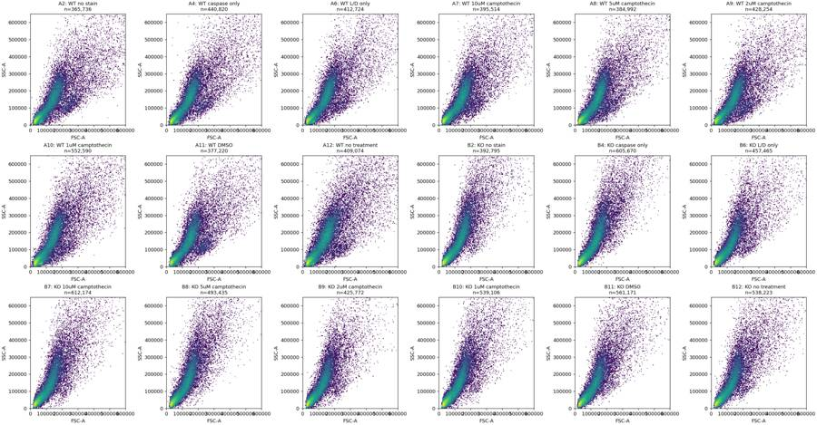
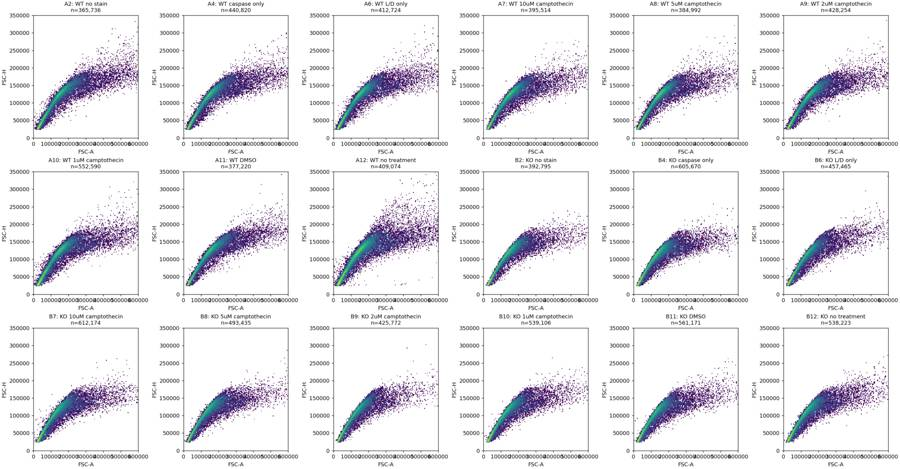
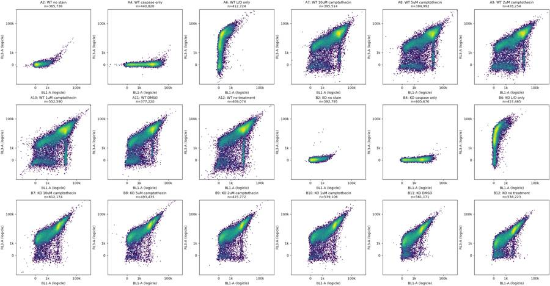
9
agent
The files have ample events and consistent detector settings. A12, the untreated WT well, has a major flow interruption followed by a surge in event rate; I’ll check whether it can support a reliable comparison. The staining patterns also make live/dead gating important here.
tool call · exec
for (const p of ["/task/outputs/explore_controls.png","/task/outputs/explore_time.png","/task/outputs/explore_scatter.png"]) {const r=await tools.view_image({path:p});image(r.image_url);}
tool output
Script completed Wall time 0.1 seconds Output:
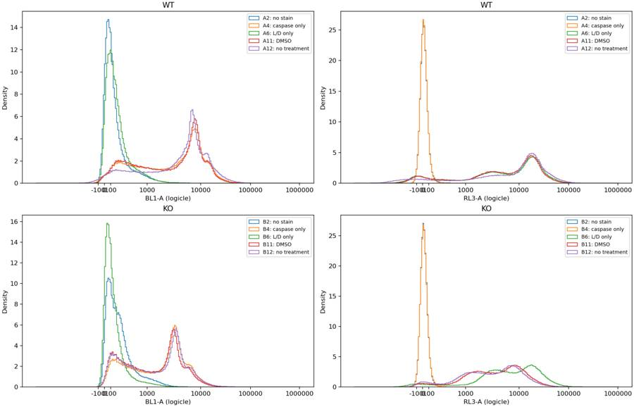
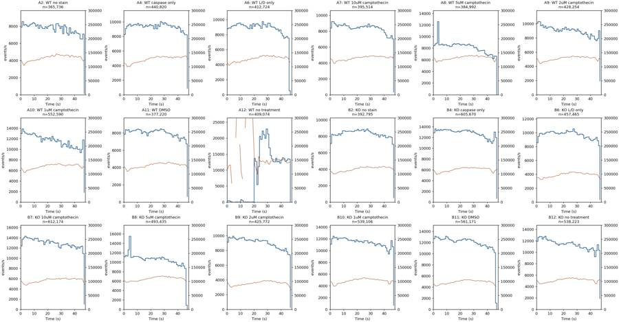
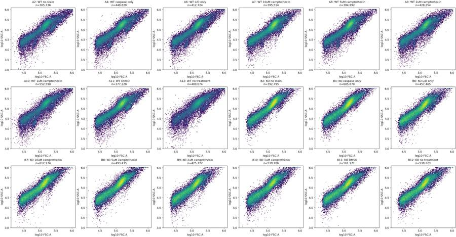
tool call · exec
text(await tools.apply_patch("*** Begin Patch\n*** Add File: /task/outputs/inspect_gates.py\n+from pathlib import Path\n+import numpy as np,pandas as pd,flowkit as fk\n+import matplotlib\n+matplotlib.use('Agg')\n+import matplotlib.pyplot as plt\n+from matplotlib.colors import LogNorm\n+ROOT=Path('/task');OUT=ROOT/'outputs'\n+layout=pd.read_csv(ROOT/'inputs/plate_layout.csv')\n+tr=fk.transforms.LogicleTransform(1048576,.5,4.5,0)\n+ticks=np.array([0,1000,10000,100000]);ft=tr.apply(ticks.astype(float))\n+fig,axs=plt.subplots(6,5,figsize=(24,25),layout='constrained')\n+hist,hs=plt.subplots(2,3,figsize=(17,10),layout='constrained')\n+for j,well in enumerate(['A6','B6','A11','B11','A7','B7']):\n+ r=layout[layout.well==well].iloc[0]\n+ s=fk.Sample(ROOT/'inputs/raw'/r.file);e=s.get_events(source='raw');d={c:e[:,i] for i,c in enumerate(s.pnn_labels)}\n+ m=(d['FSC-A']>70000)&(d['FSC-A']<650000)&(d['SSC-A']>50000)&(d['SSC-A']<950000)\n+ sing=m&(d['FSC-A']>0.85*d['FSC-H'])&(d['FSC-A']<1.6*d['FSC-H'])\n+ idx=np.flatnonzero(sing)[::max(1,int(sing.sum()/30000))]\n+ for k,c in enumerate(['BL1-A','RL3-A']):\n+ a=axs[j,k];a.hist2d(np.log10(d['FSC-A'][idx]),tr.apply(d[c][idx]),bins=100,range=[[4.7,5.9],[-.2,1]],norm=LogNorm())\n+ a.set(xlabel='log10 FSC-A',ylabel=c,yticks=ft,yticklabels=ticks)\n+ a=axs[j,2];a.hist2d(tr.apply(d['BL1-A'][idx]),tr.apply(d['RL3-A'][idx]),bins=130,range=[[-.15,.95],[-.15,.95]],norm=LogNorm())\n+ a.set(xlabel='BL1-A',ylabel='RL3-A',xticks=ft,xticklabels=ticks,yticks=ft,yticklabels=ticks)\n+ for v in [500,1000]:a.axhline(tr.apply(np.array([v],float))[0],lw=1,ls='--',color='red')\n+ a=axs[j,3];a.hist2d(d['FSC-W'][idx],d['FSC-H'][idx],bins=100,range=[[40,160],[25000,300000]],norm=LogNorm());a.set(xlabel='FSC-W',ylabel='FSC-H')\n+ a=axs[j,4];a.hist2d(d['FSC-A'][idx],d['FSC-H'][idx],bins=100,range=[[60000,350000],[25000,300000]],norm=LogNorm());a.set(xlabel='FSC-A',ylabel='FSC-H')\n+ for a in axs[j,:]:a.set_title(well+' '+r['sample']+'\\npreliminary singlets')\n+ print(well, 'cells',m.sum(),'singlets',sing.sum(),'live500',np.sum(sing&(d['RL3-A']<500)),'live1000',np.sum(sing&(d['RL3-A']<1000)))\n+for _,r in layout.iterrows():\n+ if r.treatment not in ['no stain','caspase only','L/D only','DMSO','no treatment']:continue\n+ s=fk.Sample(ROOT/'inputs/raw'/r.file);e=s.get_events(source='raw');d={c:e[:,i] for i,c in enumerate(s.pnn_labels)}\n+ m=(d['FSC-A']>70000)&(d['FSC-A']<650000)&(d['SSC-A']>50000)&(d['SSC-A']<950000)&(d['FSC-A']>0.85*d['FSC-H'])&(d['FSC-A']<1.6*d['FSC-H'])\n+ g=0 if r.genotype=='WT' else 1\n+ for k,(c,m1) in enumerate([('BL1-A',m),('RL3-A',m),('BL1-A',m&(d['RL3-A']<1000))]):\n+ hs[g,k].hist(tr.apply(d[c][m1]),bins=np.linspace(-.2,.95,250),histtype='step',density=True,label=r.well+' '+r.treatment)\n+ hs[g,k].set(xlabel=c,ylabel='density',title=r.genotype+' '+('live' if k==2 else 'singlets'),xticks=ft,xticklabels=ticks)\n+ if r.treatment in ['no stain','L/D only']:\n+ print(r.well, 'BL1 singlet quantiles',np.quantile(d['BL1-A'][m],[.95,.98,.99,.995,.999]), 'BL1 live quantiles',np.quantile(d['BL1-A'][m&(d['RL3-A']<1000)],[.95,.98,.99,.995,.999]))\n+ if r.treatment in ['no stain','caspase only']:\n+ print(r.well, 'RL3 singlet quantiles',np.quantile(d['RL3-A'][m],[.95,.98,.99,.995,.999]))\n+for a in hs.flat:a.legend(fontsize=8)\n+fig.savefig(OUT/'inspect_gates.png',dpi=115)\n+hist.savefig(OUT/'inspect_control_histograms.png',dpi=150)\n*** End Patch"));
text(await tools.exec_command({cmd:"python outputs/inspect_gates.py","yield_time_ms":1000,"max_output_tokens":4000}));
tool output
Script completed
Wall time 1.2 seconds
Output:
{}
{"chunk_id":"396477","wall_time_seconds":1.000970251,"session_id":94084,"original_token_count":0,"output":""}tool call · exec
text(await tools.exec_command({cmd:"python - <<'PY'\nimport flowkit as fk, pandas as pd,numpy as np\nfrom pathlib import Path\nL=pd.read_csv('inputs/plate_layout.csv')\nfor _,r in L.iterrows():\n s=fk.Sample(Path('inputs/raw')/r.file);e=s.get_events(source='raw');d={c:e[:,i] for i,c in enumerate(s.pnn_labels)}\n cell=(d['FSC-A']>=70000)&(d['FSC-A']<650000)&(d['SSC-A']>=50000)&(d['SSC-A']<950000)\n sing=cell&(d['FSC-A']>=.85*d['FSC-H'])&(d['FSC-A']<1.6*d['FSC-H'])\n vals=[]\n for v in [500,1000,2000]:\n live=sing&(d['RL3-A']<v)\n vals.append(f'RL3<{v}: live={live.sum()}, {100*live.sum()/sing.sum():.2f}%, C1000={100*np.mean(d[\"BL1-A\"][live]>=1000):.2f}%, C2000={100*np.mean(d[\"BL1-A\"][live]>=2000):.2f}%, med={np.median(d[\"BL1-A\"][live]):.0f}')\n print(r.well,'sing',sing.sum(),' | '.join(vals))\nPY","yield_time_ms":1000,"max_output_tokens":5000}));
text(await tools.write_stdin({session_id:94084,chars:"","yield_time_ms":1000,"max_output_tokens":4000}));
tool output
Script completed
Wall time 1.2 seconds
Output:
{"chunk_id":"178e35","wall_time_seconds":1.000768961,"session_id":90492,"original_token_count":0,"output":""}
{"chunk_id":"8f0f4a","wall_time_seconds":0.00000131,"exit_code":0,"original_token_count":278,"output":"A6 cells 254955 singlets 193694 live500 15679 live1000 19264\nB6 cells 261619 singlets 206026 live500 9315 live1000 11741\nA11 cells 243656 singlets 185849 live500 16348 live1000 19199\nB11 cells 326415 singlets 248435 live500 7961 live1000 11042\nA7 cells 259000 singlets 200310 live500 12510 live1000 14626\nB7 cells 367814 singlets 275993 live500 6997 live1000 9150\nA2 BL1 singlet quantiles [ 650. 887. 1053.5 1224. 1670.75] BL1 live quantiles [ 650. 887. 1053. 1224. 1670.752]\nA2 RL3 singlet quantiles [110. 133. 149. 164. 196.]\nA4 RL3 singlet quantiles [110. 134. 150. 166. 196.]\nA6 BL1 singlet quantiles [ 680. 912. 1069.07 1222. 1620.614] BL1 live quantiles [ 265. 395. 546.37 774.37 2526.587]\nB2 BL1 singlet quantiles [ 990. 1386. 1641. 1886.085 2419.417] BL1 live quantiles [ 989. 1384. 1638.82 1880. 2409.482]\nB2 RL3 singlet quantiles [115. 141. 160. 178. 226.]\nB4 RL3 singlet quantiles [112. 138. 156. 173. 212.]\nB6 BL1 singlet quantiles [ 597. 1006.5 1265. 1512. 2069.975] BL1 live quantiles [ 263. 475. 643.2 818.3 1268.4]\n"}tool call · exec
for (const p of ["/task/outputs/inspect_control_histograms.png","/task/outputs/inspect_gates.png"]) {const r=await tools.view_image({path:p});image(r.image_url);}
text(await tools.write_stdin({session_id:90492,chars:"","yield_time_ms":1000,"max_output_tokens":5000}));
tool output
Script completed Wall time 0.1 seconds Output:
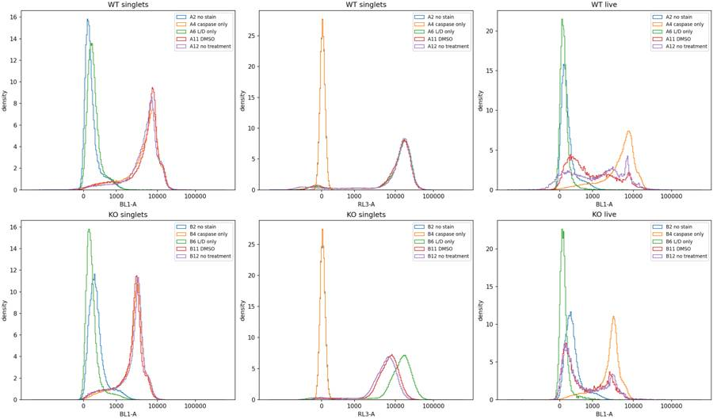
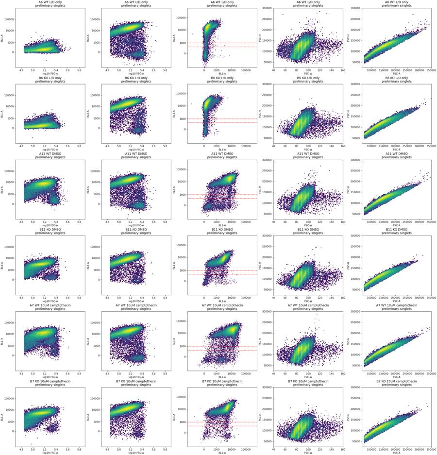
{"chunk_id":"87e716","wall_time_seconds":0.00000322,"exit_code":0,"original_token_count":969,"output":"A2 sing 163253 RL3<500: live=163247, 100.00%, C1000=1.24%, C2000=0.03%, med=129 | RL3<1000: live=163251, 100.00%, C1000=1.24%, C2000=0.03%, med=129 | RL3<2000: live=163252, 100.00%, C1000=1.24%, C2000=0.03%, med=129\nA4 sing 202942 RL3<500: live=202937, 100.00%, C1000=89.82%, C2000=82.54%, med=5771 | RL3<1000: live=202941, 100.00%, C1000=89.82%, C2000=82.54%, med=5771 | RL3<2000: live=202941, 100.00%, C1000=89.82%, C2000=82.54%, med=5771\nA6 sing 193695 RL3<500: live=15679, 8.09%, C1000=0.33%, C2000=0.16%, med=76 | RL3<1000: live=19264, 9.95%, C1000=0.33%, C2000=0.14%, med=81 | RL3<2000: live=23370, 12.07%, C1000=0.31%, C2000=0.12%, med=87\nA7 sing 200310 RL3<500: live=12510, 6.25%, C1000=67.74%, C2000=44.95%, med=1762 | RL3<1000: live=14626, 7.30%, C1000=69.42%, C2000=47.34%, med=1870 | RL3<2000: live=17316, 8.64%, C1000=72.05%, C2000=51.21%, med=2068\nA8 sing 196634 RL3<500: live=16769, 8.53%, C1000=76.86%, C2000=54.27%, med=2198 | RL3<1000: live=19586, 9.96%, C1000=78.13%, C2000=56.40%, med=2299 | RL3<2000: live=23036, 11.72%, C1000=80.11%, C2000=59.91%, med=2511\nA9 sing 203941 RL3<500: live=21643, 10.61%, C1000=77.20%, C2000=54.84%, med=2213 | RL3<1000: live=24718, 12.12%, C1000=78.33%, C2000=56.80%, med=2322 | RL3<2000: live=28499, 13.97%, C1000=79.79%, C2000=59.18%, med=2466\nA10 sing 239448 RL3<500: live=21652, 9.04%, C1000=72.30%, C2000=51.61%, med=2075 | RL3<1000: live=26196, 10.94%, C1000=74.53%, C2000=54.86%, med=2265 | RL3<2000: live=31579, 13.19%, C1000=76.80%, C2000=58.13%, med=2486\nA11 sing 185849 RL3<500: live=16348, 8.80%, C1000=38.30%, C2000=25.10%, med=559 | RL3<1000: live=19199, 10.33%, C1000=41.40%, C2000=28.29%, med=650 | RL3<2000: live=22565, 12.14%, C1000=45.78%, C2000=32.71%, med=804\nA12 sing 198057 RL3<500: live=18175, 9.18%, C1000=52.29%, C2000=39.54%, med=1164 | RL3<1000: live=21661, 10.94%, C1000=55.14%, C2000=42.57%, med=1387 | RL3<2000: live=25659, 12.96%, C1000=58.07%, C2000=45.36%, med=1601\nB2 sing 207585 RL3<500: live=207517, 99.97%, C1000=4.88%, C2000=0.35%, med=253 | RL3<1000: live=207520, 99.97%, C1000=4.88%, C2000=0.35%, med=253 | RL3<2000: live=207526, 99.97%, C1000=4.88%, C2000=0.35%, med=253\nB4 sing 298710 RL3<500: live=298699, 100.00%, C1000=87.64%, C2000=73.75%, med=2898 | RL3<1000: live=298703, 100.00%, C1000=87.64%, C2000=73.75%, med=2898 | RL3<2000: live=298703, 100.00%, C1000=87.64%, C2000=73.75%, med=2898\nB6 sing 206033 RL3<500: live=9315, 4.52%, C1000=0.31%, C2000=0.04%, med=71 | RL3<1000: live=11741, 5.70%, C1000=0.28%, C2000=0.04%, med=75 | RL3<2000: live=14794, 7.18%, C1000=0.30%, C2000=0.03%, med=79\nB7 sing 275997 RL3<500: live=6997, 2.54%, C1000=60.84%, C2000=49.89%, med=1995 | RL3<1000: live=9150, 3.32%, C1000=61.13%, C2000=49.49%, med=1958 | RL3<2000: live=12304, 4.46%, C1000=61.37%, C2000=48.96%, med=1908\nB8 sing 239244 RL3<500: live=4134, 1.73%, C1000=59.39%, C2000=47.31%, med=1704 | RL3<1000: live=5472, 2.29%, C1000=59.67%, C2000=47.33%, med=1721 | RL3<2000: live=7284, 3.04%, C1000=59.31%, C2000=46.40%, med=1662\nB9 sing 195723 RL3<500: live=7598, 3.88%, C1000=50.55%, C2000=40.62%, med=1062 | RL3<1000: live=9565, 4.89%, C1000=50.91%, C2000=40.76%, med=1089 | RL3<2000: live=11984, 6.12%, C1000=52.08%, C2000=41.59%, med=1173\nB10 sing 248589 RL3<500: live=7916, 3.18%, C1000=47.95%, C2000=36.65%, med=852 | RL3<1000: live=10324, 4.15%, C1000=50.41%, C2000=38.39%, med=1032 | RL3<2000: live=13429, 5.40%, C1000=52.39%, C2000=40.12%, med=1158\nB11 sing 248437 RL3<500: live=7961, 3.20%, C1000=29.68%, C2000=18.29%, med=247 | RL3<1000: live=11042, 4.44%, C1000=34.48%, C2000=22.43%, med=362 | RL3<2000: live=15560, 6.26%, C1000=35.15%, C2000=22.29%, med=495\nB12 sing 242191 RL3<500: live=11871, 4.90%, C1000=29.88%, C2000=20.24%, med=260 | RL3<1000: live=15601, 6.44%, C1000=33.86%, C2000=23.72%, med=361 | RL3<2000: live=22531, 9.30%, C1000=33.24%, C2000=20.87%, med=488\n"}tool call · exec
text(await tools.exec_command({cmd:"python - <<'PY'\nimport flowkit as fk,pandas as pd,numpy as np\nfrom pathlib import Path\nL=pd.read_csv('inputs/plate_layout.csv')\nfor w in ['A8','B8','A12']:\n r=L[L.well==w].iloc[0];s=fk.Sample(Path('inputs/raw')/r.file);e=s.get_events(source='raw');t=e[:,0];df=np.diff(t)\n print(w,'reversals',[(int(i),float(t[i]),float(t[i+1]),float(df[i])) for i in np.flatnonzero(df<0)])\n h,b=np.histogram(t,np.arange(0,49))\n print('one second bins:',h.tolist())\n for lo,hi in [(0,20),(20,32),(32,46)]:\n m=(t>=lo)&(t<hi)\n print(lo,hi,'events',int(m.sum()),'median FSC-A',np.median(e[m,1]),'median BL1-A',np.median(e[m,3]),'median RL3-A',np.median(e[m,4]))\nPY","max_output_tokens":4000}));
text(await tools.apply_patch("*** Begin Patch\n*** Add File: /task/outputs/gate_definition.py\n+\"\"\"One shared, uncompensated strategy for EXP23000279, acquired 2023-03-09.\"\"\"\n+import flowkit as fk\n+\n+CELL_BOUNDS={'FSC-A': (70000,650000), 'SSC-A': (50000,950000)}\n+SINGLET_VERTICES=[(21250,25000),(40000,25000),(640000,400000),(340000,400000)]\n+LIVE_MAX=1000\n+CASPASE_MIN=2000\n+POPULATIONS=[\n+ ('cells','cells','all_events',('root',)),\n+ ('singlets','singlets','cells',('root','cells')),\n+ ('live','live','singlets',('root','cells','singlets')),\n+ ('caspase_positive','marker_positive','live',('root','cells','singlets','live')),\n+ ('dead','other','singlets',('root','cells','singlets')),\n+ ('caspase_dead','other','dead',('root','cells','singlets','dead')),\n+ ('caspase_all_singlets','other','singlets',('root','cells','singlets')),\n+]\n+\n+def dim(channel,low=None,high=None):\n+ return fk.Dimension(channel,compensation_ref='uncompensated',range_min=low,range_max=high)\n+\n+def build_strategy():\n+ s=fk.GatingStrategy()\n+ s.add_gate(fk.gates.RectangleGate('cells',[dim(c,*bounds) for c,bounds in CELL_BOUNDS.items()]),('root',))\n+ s.add_gate(fk.gates.PolygonGate('singlets',[dim('FSC-A'),dim('FSC-H')],SINGLET_VERTICES),('root','cells'))\n+ s.add_gate(fk.gates.RectangleGate('live',[dim('RL3-A',high=LIVE_MAX)]),('root','cells','singlets'))\n+ s.add_gate(fk.gates.RectangleGate('caspase_positive',[dim('BL1-A',low=CASPASE_MIN)]),('root','cells','singlets','live'))\n+ s.add_gate(fk.gates.RectangleGate('dead',[dim('RL3-A',low=LIVE_MAX)]),('root','cells','singlets'))\n+ s.add_gate(fk.gates.RectangleGate('caspase_dead',[dim('BL1-A',low=CASPASE_MIN)]),('root','cells','singlets','dead'))\n+ s.add_gate(fk.gates.RectangleGate('caspase_all_singlets',[dim('BL1-A',low=CASPASE_MIN)]),('root','cells','singlets'))\n+ return s\n+\n+if __name__=='__main__':\n+ path='/task/outputs/gates.xml'\n+ with open(path,'wb') as h:fk.export_gatingml(build_strategy(),h)\n+ s=fk.parse_gating_xml(path)\n+ print('Saved and loaded',path)\n+ print(s.get_gate_hierarchy(output='ascii'))\n*** End Patch"));
text(await tools.exec_command({cmd:"python outputs/gate_definition.py","max_output_tokens":3000}));
tool output
Script completed
Wall time 2.1 seconds
Output:
{"chunk_id":"b9c562","wall_time_seconds":1.001189031,"exit_code":0,"original_token_count":447,"output":"A8 reversals [(3978, 3.923, 0.014, -3.9090000000000003)]\none second bins: [8458, 8729, 8875, 12591, 8580, 8636, 8712, 8505, 8619, 8628, 8429, 8452, 8316, 8333, 8639, 8795, 8704, 8778, 8783, 8703, 8533, 8671, 8689, 8543, 8526, 8618, 8734, 8503, 8485, 8443, 8080, 8142, 7874, 7506, 7591, 7605, 7613, 7672, 7099, 6874, 6702, 6840, 6965, 6893, 6222, 6679, 6625, 0]\n0 20 events 176265 median FSC-A 126463.0 median BL1-A 8562.0 median RL3-A 8127.0\n20 32 events 101967 median FSC-A 137626.0 median BL1-A 9232.0 median RL3-A 9841.0\n32 46 events 100135 median FSC-A 133715.0 median BL1-A 8141.0 median RL3-A 9269.0\nB8 reversals [(5808, 4.402, 0.014, -4.388)]\none second bins: [11213, 11478, 11329, 12653, 15521, 11021, 11076, 11264, 11228, 11243, 11246, 11102, 10961, 10804, 10595, 10384, 10860, 10880, 10796, 10769, 10945, 10828, 10868, 10543, 10877, 10907, 10974, 10652, 11088, 10975, 10670, 10638, 10623, 10172, 10196, 10020, 10178, 9939, 10007, 9492, 9231, 9348, 9156, 9858, 9205, 8693, 929, 0]\n0 20 events 226423 median FSC-A 102765.0 median BL1-A 2801.0 median RL3-A 7802.0\n20 32 events 129965 median FSC-A 116469.0 median BL1-A 3300.0 median RL3-A 9406.0\n32 46 events 136118 median FSC-A 112348.5 median BL1-A 2925.0 median RL3-A 8809.5\nA12 reversals []\none second bins: [372, 447, 217, 48, 1, 0, 47, 54, 0, 50, 757, 500, 3, 71, 37, 28, 55, 0, 63, 74, 13660, 12763, 5468, 11100, 20605, 19646, 22320, 21113, 19989, 22923, 21341, 16971, 14588, 13514, 12671, 12611, 13756, 12583, 12837, 12217, 13143, 13898, 13626, 12785, 13113, 13577, 13432, 0]\n0 20 events 2824 median FSC-A 114985.5 median BL1-A 1302.5 median RL3-A 1573.5\n20 32 events 207899 median FSC-A 140274.0 median BL1-A 5395.0 median RL3-A 11991.0\n32 46 events 184919 median FSC-A 148141.0 median BL1-A 5147.0 median RL3-A 11556.0\n"}
{}
{"chunk_id":"670664","wall_time_seconds":0.746408533,"exit_code":0,"original_token_count":62,"output":"Saved and loaded /task/outputs/gates.xml\nroot\n╰── cells\n ╰── singlets\n ├── live\n │ ╰── caspase_positive\n ├── dead\n │ ╰── caspase_dead\n ╰── caspase_all_singlets\n"}14
agent
The shared gates are saved. They identify a small Zombie NIR-low population in the stained wells, and a CellEvent response to camptothecin, but no consistent increase in KO over WT. I’m checking how sensitive that finding is to the fluorescence thresholds before drawing a conclusion.
tool call · exec
text(await tools.apply_patch("*** Begin Patch\n*** Add File: /task/outputs/analyse.py\n+\"\"\"Reproduce counts, QC, summaries and diagnostic figures from the saved GatingML.\"\"\"\n+from pathlib import Path\n+import json\n+import numpy as np\n+import pandas as pd\n+import flowkit as fk\n+import matplotlib\n+matplotlib.use('Agg')\n+import matplotlib.pyplot as plt\n+from matplotlib.colors import LogNorm\n+from matplotlib.patches import Polygon, Rectangle\n+from gate_definition import build_strategy, POPULATIONS, CELL_BOUNDS, SINGLET_VERTICES, LIVE_MAX, CASPASE_MIN\n+\n+ROOT=Path('/task');OUT=ROOT/'outputs'\n+LAYOUT=pd.read_csv(ROOT/'inputs/plate_layout.csv')\n+TR=fk.transforms.LogicleTransform(1048576,.5,4.5,0)\n+with open(OUT/'gates.xml','wb') as h:fk.export_gatingml(build_strategy(),h)\n+STRATEGY=fk.parse_gating_xml(str(OUT/'gates.xml'))\n+COLORS={'WT':'#246A9F','KO':'#C96723'}\n+EXCLUDE={'A12'}\n+plt.rcParams.update({'font.size':10,'axes.spines.top':False,'axes.spines.right':False})\n+\n+def percent(a,b):return 100*a/b if b else np.nan\n+\n+def main():\n+ counts=[];qc=[];sensitivity=[];morph_sensitivity=[];time_rows=[];control_rows=[]\n+ figs={k:plt.subplots(3,6,figsize=(22,12),layout='constrained') for k in ['cells','singlets','fluorescence']}\n+ control_fig,ca=plt.subplots(2,2,figsize=(12,9),layout='constrained')\n+ rng=np.random.default_rng(279)\n+ for j,r in LAYOUT.iterrows():\n+ sample=fk.Sample(ROOT/'inputs/raw'/r.file)\n+ res=STRATEGY.gate_sample(sample)\n+ e=sample.get_events(source='raw');d={c:e[:,i] for i,c in enumerate(sample.pnn_labels)}\n+ ns={'all_events':sample.event_count}\n+ masks={}\n+ counts.append([r.file,r.well,'all_events','other','none',sample.event_count,np.nan])\n+ for name,role,parent,path in POPULATIONS:\n+ n=int(res.get_gate_count(name));ns[name]=n;masks[name]=res.get_gate_membership(name)\n+ p=percent(n,ns[parent])\n+ assert np.isclose(p,res.get_gate_relative_percent(name))\n+ counts.append([r.file,r.well,name,role,parent,n,p])\n+ assert ns['live']+ns['dead']==ns['singlets']\n+ assert ns['caspase_positive']+ns['caspase_dead']==ns['caspase_all_singlets']\n+ row=dict(file=r.file,well=r.well,sample=r['sample'],genotype=r.genotype,treatment=r.treatment,**ns)\n+ row.update(live_pct=percent(ns['live'],ns['singlets']),caspase_live_pct=percent(ns['caspase_positive'],ns['live']),caspase_singlet_pct=percent(ns['caspase_all_singlets'],ns['singlets']),caspase_dead_pct=percent(ns['caspase_dead'],ns['dead']),dead_share_of_caspase_pct=percent(ns['caspase_dead'],ns['caspase_all_singlets']),caspase_live_median=float(np.median(d['BL1-A'][masks['live']])),zombie_singlet_median=float(np.median(d['RL3-A'][masks['singlets']])))\n+ for channel in ['BL1-A','RL3-A']:\n+ row[channel+'_singlet_saturated']=int(np.sum(masks['singlets']&(d[channel]>=1048575)))\n+ reversals=np.flatnonzero(np.diff(d['Time'])<0)\n+ if len(reversals):\n+ restart_index=int(reversals[0]+1);tail=np.arange(len(e))>=restart_index\n+ row['initial_fragment_events']=restart_index\n+ row['initial_fragment_pct']=percent(restart_index,len(e))\n+ row['caspase_live_pct_after_restart']=percent(np.sum(masks['caspase_positive']&tail),np.sum(masks['live']&tail))\n+ row['restart_effect_pp']=row['caspase_live_pct_after_restart']-row['caspase_live_pct']\n+ qc.append(row)\n+ for vmax in [500,1000,2000]:\n+ live=masks['singlets']&(d['RL3-A']<vmax)\n+ for cmin in [1000,1500,2000,2500,3000]:\n+ cp=live&(d['BL1-A']>=cmin)\n+ sensitivity.append(dict(well=r.well,genotype=r.genotype,treatment=r.treatment,zombie_max=vmax,caspase_min=cmin,live_count=int(live.sum()),caspase_count=int(cp.sum()),caspase_live_pct=percent(cp.sum(),live.sum()),live_pct=percent(live.sum(),masks['singlets'].sum())))\n+ for lower_fsc,lower_ssc,label in [(50000,30000,'broader_cells'),(70000,50000,'main_cells'),(90000,75000,'narrower_cells')]:\n+ cells=(d['FSC-A']>=lower_fsc)&(d['FSC-A']<650000)&(d['SSC-A']>=lower_ssc)&(d['SSC-A']<950000)\n+ for ratio in [1.4,1.6,1.8]:\n+ sing=cells&(d['FSC-A']>=.85*d['FSC-H'])&(d['FSC-A']<=ratio*d['FSC-H'])&(d['FSC-H']>=25000)&(d['FSC-H']<=400000)\n+ live=sing&(d['RL3-A']<LIVE_MAX);cp=live&(d['BL1-A']>=CASPASE_MIN)\n+ morph_sensitivity.append(dict(well=r.well,genotype=r.genotype,treatment=r.treatment,scatter_gate=label,max_area_height_ratio=ratio,singlet_count=int(sing.sum()),live_count=int(live.sum()),caspase_count=int(cp.sum()),caspase_live_pct=percent(cp.sum(),live.sum()),live_pct=percent(live.sum(),sing.sum())))\n+ for lo,hi in [(0,10),(10,20),(20,30),(30,40),(40,46),(0,20),(20,32),(32,46)]:\n+ tmask=(d['Time']>=lo)&(d['Time']<hi)\n+ time_rows.append(dict(well=r.well,start_s=lo,end_s=hi,events=int(tmask.sum()),rate_hz=float(tmask.sum()/(hi-lo)),median_FSC_A=float(np.median(d['FSC-A'][tmask])),live_count=int(np.sum(masks['live']&tmask)),caspase_live_pct=percent(np.sum(masks['caspase_positive']&tmask),np.sum(masks['live']&tmask))))\n+ # Diagnostic plots: random samples only affect display, never the counts.\n+ def subsample(mask=None,n=25000):\n+ inds=np.arange(len(e)) if mask is None else np.flatnonzero(mask)\n+ return rng.choice(inds,min(n,len(inds)),replace=False)\n+ idx=subsample()\n+ ax=figs['cells'][1].flat[j]\n+ ax.hist2d(np.log10(np.maximum(d['FSC-A'][idx],1)),np.log10(np.maximum(d['SSC-A'][idx],1)),bins=120,range=[[4.1,6.1],[3.4,6.1]],norm=LogNorm(),cmap='viridis')\n+ ax.add_patch(Rectangle((np.log10(70000),np.log10(50000)),np.log10(650000/70000),np.log10(950000/50000),fill=False,color='#F15B4F',lw=1.5))\n+ ax.set(xlabel='log10 FSC-A',ylabel='log10 SSC-A')\n+
… [8,715 more characters not shown]tool output
Script completed
Wall time 1.2 seconds
Output:
{}
{"chunk_id":"b58da6","wall_time_seconds":1.001524672,"session_id":27624,"original_token_count":0,"output":""}tool call · exec
text(await tools.write_stdin({session_id:27624,chars:"","yield_time_ms":1000,"max_output_tokens":6000}));
text(await tools.exec_command({cmd:"ls -lh outputs","max_output_tokens":3000}));
tool output
Script completed
Wall time 0.0 seconds
Output:
{"chunk_id":"5de089","wall_time_seconds":0.000003,"exit_code":0,"original_token_count":684,"output":"well sample cells singlets live caspase_positive live_pct caspase_live_pct caspase_singlet_pct dead_share_of_caspase_pct\n A2 WT no stain 224151 163253 163251 47 99.998775 0.028790 0.028790 0.000000\n A4 WT caspase only 272195 202942 202941 167509 99.999507 82.540738 82.540824 0.000597\n A6 WT L/D only 254956 193695 19264 27 9.945533 0.140158 0.033042 57.812500\n A7 WT 10uM camptothecin 259000 200310 14626 6924 7.301682 47.340353 89.911637 96.155512\n A8 WT 5uM camptothecin 249506 196634 19586 11046 9.960638 56.397427 90.667433 93.804233\n A9 WT 2uM camptothecin 267989 203941 24718 14040 12.120172 56.800712 88.746745 92.242708\n A10 WT 1uM camptothecin 333138 239447 26196 14370 10.940208 54.855703 88.575760 93.224638\n A11 WT DMSO 243656 185849 19199 5431 10.330430 28.287932 83.387589 96.495564\n A12 WT no treatment 277773 198053 21659 9219 10.935962 42.564292 85.261016 94.540512\n B2 KO no stain 253481 207585 207520 719 99.968688 0.346473 0.351663 1.506849\n B4 KO caspase only 390402 298710 298703 220288 99.997657 73.748171 73.748452 0.002724\n B6 KO L/D only 261626 206033 11741 5 5.698602 0.042586 0.124737 98.054475\n B7 KO 10uM camptothecin 367818 275997 9150 4528 3.315253 49.486339 83.348732 98.031647\n B8 KO 5uM camptothecin 305157 239244 5472 2590 2.287205 47.331871 82.982645 98.695418\n B9 KO 2uM camptothecin 240873 195723 9565 3899 4.887009 40.763199 81.057413 97.542358\n B10 KO 1uM camptothecin 319549 248589 10324 3963 4.153040 38.386284 83.794536 98.097492\n B11 KO DMSO 326417 248437 11042 2477 4.444588 22.432530 70.248795 98.580711\n B12 KO no treatment 320148 242191 15601 3701 6.441610 23.722838 71.695480 97.868579\n"}
{"chunk_id":"935ac3","wall_time_seconds":0.00000299,"exit_code":0,"original_token_count":432,"output":"total 4.5M\ndrwxr-xr-x 2 root root 4.0K Nov 10 17:13 __pycache__\n-rw-r--r-- 1 root root 3.6K Nov 10 17:10 acquisition_qc.csv\n-rw-r--r-- 1 root root 14K Nov 10 17:13 analyse.py\n-rw-r--r-- 1 root root 2.9K Nov 10 17:14 condition_summary.csv\n-rw-r--r-- 1 root root 141K Nov 10 17:14 control_gates.png\n-rw-r--r-- 1 root root 546 Nov 10 17:13 control_qc.csv\n-rw-r--r-- 1 root root 14K Nov 10 17:13 counts.csv\n-rw-r--r-- 1 root root 3.9K Nov 10 17:09 explore.py\n-rw-r--r-- 1 root root 138K Nov 10 17:10 explore_controls.png\n-rw-r--r-- 1 root root 303K Nov 10 17:10 explore_fluorescence.png\n-rw-r--r-- 1 root root 466K Nov 10 17:10 explore_linear_scatter.png\n-rw-r--r-- 1 root root 343K Nov 10 17:10 explore_pulses.png\n-rw-r--r-- 1 root root 454K Nov 10 17:10 explore_scatter.png\n-rw-r--r-- 1 root root 395K Nov 10 17:10 explore_time.png\n-rw-r--r-- 1 root root 56K Nov 10 17:10 fcs_metadata.json\n-rw-r--r-- 1 root root 199K Nov 10 17:14 figure.png\n-rw-r--r-- 1 root root 4.6K Nov 10 17:14 flags.csv\n-rw-r--r-- 1 root root 2.0K Nov 10 17:12 gate_definition.py\n-rw-r--r-- 1 root root 3.0K Nov 10 17:13 gates.xml\n-rw-r--r-- 1 root root 426K Nov 10 17:13 gating_cells.png\n-rw-r--r-- 1 root root 279K Nov 10 17:14 gating_fluorescence.png\n-rw-r--r-- 1 root root 502K Nov 10 17:13 gating_singlets.png\n-rw-r--r-- 1 root root 159K Nov 10 17:11 inspect_control_histograms.png\n-rw-r--r-- 1 root root 520K Nov 10 17:11 inspect_gates.png\n-rw-r--r-- 1 root root 3.2K Nov 10 17:10 inspect_gates.py\n-rw-r--r-- 1 root root 13K Nov 10 17:13 scatter_sensitivity.csv\n-rw-r--r-- 1 root root 18K Nov 10 17:13 threshold_sensitivity.csv\n-rw-r--r-- 1 root root 6.9K Nov 10 17:13 time_windows.csv\n-rw-r--r-- 1 root root 4.2K Nov 10 17:13 well_metrics.csv\n"}tool call · exec
const results=await Promise.allSettled([
tools.exec_command({cmd:"python - <<'PY'\nimport pandas as pd,numpy as np\nq=pd.read_csv('outputs/well_metrics.csv')\nprint('Restart effects:');print(q[q.well.isin(['A8','B8'])][['well','initial_fragment_events','initial_fragment_pct','caspase_live_pct','caspase_live_pct_after_restart','restart_effect_pp']].to_string(index=False))\nprint('Control QC:');print(pd.read_csv('outputs/control_qc.csv').to_string(index=False))\nprint('Fluorescence saturation within singlets:');print(q[['well','BL1-A_singlet_saturated','RL3-A_singlet_saturated']].to_string(index=False))\nfor fname,cols in [('threshold_sensitivity.csv',['zombie_max','caspase_min']),('scatter_sensitivity.csv',['scatter_gate','max_area_height_ratio'])]:\n s=pd.read_csv('outputs/'+fname);print(fname)\n p=s.pivot(index=['treatment']+cols,columns='genotype',values='caspase_live_pct');p['KO_minus_WT_pp']=p['KO']-p['WT']\n print(p.groupby('treatment').KO_minus_WT_pp.agg(['min','max']).to_string())\n if fname.startswith('threshold'):\n print('Default live gate threshold sensitivity:');print(p.reset_index().query('zombie_max == 1000').to_string(index=False))\nprint('Time window primary:');print(pd.read_csv('outputs/time_windows.csv').query('well in [\"A11\",\"B11\",\"A12\"] and end_s-start_s == 10').to_string(index=False))\nPY","max_output_tokens":6000}),
tools.exec_command({cmd:"cat outputs/gates.xml && cat outputs/condition_summary.csv","max_output_tokens":6000})
]);results.forEach((r,i)=>text({i,...r}));
for(const p of ["/task/outputs/figure.png","/task/outputs/control_gates.png","/task/outputs/gating_cells.png"]) {const r=await tools.view_image({path:p});image(r.image_url);}
tool output
Script completed Wall time 0.4 seconds Output:
{"i":0,"status":"fulfilled","value":{"chunk_id":"98a460","wall_time_seconds":0.126668168,"exit_code":0,"original_token_count":2003,"output":"Restart effects:\nwell initial_fragment_events initial_fragment_pct caspase_live_pct caspase_live_pct_after_restart restart_effect_pp\n A8 3979.0 1.033528 56.397427 56.459948 0.062522\n B8 5809.0 1.177257 47.331871 47.552189 0.220318\nControl QC:\nwell sample BL1_singlet_99 BL1_singlet_995 RL3_singlet_999 caspase_singlet_pct caspase_live_pct live_pct\n A2 WT no stain 1053.48 1224.000 196.000 0.028790 0.028790 99.998775\n A4 WT caspase only 17931.59 19759.770 196.000 82.540824 82.540738 99.999507\n A6 WT L/D only 1069.06 1222.000 57023.956 0.033042 0.140158 9.945533\n B2 KO no stain 1641.00 1886.080 226.000 0.351663 0.346473 99.968688\n B4 KO caspase only 7754.00 8585.455 212.000 73.748452 73.748171 99.997657\n B6 KO L/D only 1265.00 1512.000 65414.480 0.124737 0.042586 5.698602\nFluorescence saturation within singlets:\nwell BL1-A_singlet_saturated RL3-A_singlet_saturated\n A2 0 0\n A4 0 0\n A6 0 0\n A7 0 0\n A8 0 0\n A9 0 0\n A10 0 0\n A11 0 0\n A12 0 0\n B2 0 0\n B4 0 0\n B6 0 0\n B7 0 0\n B8 0 0\n B9 0 0\n B10 0 0\n B11 0 0\n B12 0 0\nthreshold_sensitivity.csv\n min max\ntreatment \n10uM camptothecin -10.678686 11.545157\n1uM camptothecin -24.406231 -7.069395\n2uM camptothecin -27.710994 -3.157535\n5uM camptothecin -20.801322 1.365914\nDMSO -14.108030 -5.855401\nL/D only -0.180287 -0.014948\ncaspase only -28.803439 -2.180383\nno stain 0.013059 3.647774\nno treatment -25.624421 -16.545775\nDefault live gate threshold sensitivity:\n treatment zombie_max caspase_min KO WT KO_minus_WT_pp\n10uM camptothecin 1000 1000 61.125683 69.424313 -8.298630\n10uM camptothecin 1000 1500 54.994536 57.931082 -2.936546\n10uM camptothecin 1000 2000 49.486339 47.340353 2.145986\n10uM camptothecin 1000 2500 45.202186 38.821277 6.380909\n10uM camptothecin 1000 3000 40.469945 32.455900 8.014045\n 1uM camptothecin 1000 1000 50.406819 74.530463 -24.123644\n 1uM camptothecin 1000 1500 43.607129 64.612918 -21.005789\n 1uM camptothecin 1000 2000 38.386284 54.855703 -16.469419\n 1uM camptothecin 1000 2500 33.979078 46.132997 -12.153920\n 1uM camptothecin 1000 3000 29.736536 39.444953 -9.708417\n 2uM camptothecin 1000 1000 50.914794 78.327535 -27.412741\n 2uM camptothecin 1000 1500 45.426032 67.905979 -22.479947\n 2uM camptothecin 1000 2000 40.763199 56.800712 -16.037513\n 2uM camptothecin 1000 2500 36.706743 46.516708 -9.809965\n 2uM camptothecin 1000 3000 32.713016 38.417348 -5.704331\n 5uM camptothecin 1000 1000 59.667398 78.127234 -18.459836\n 5uM camptothecin 1000 1500 53.143275 67.614623 -14.471348\n 5uM camptothecin 1000 2000 47.331871 56.397427 -9.065555\n 5uM camptothecin 1000 2500 41.593567 46.099255 -4.505687\n 5uM camptothecin 1000 3000 36.366959 38.108853 -1.741894\n DMSO 1000 1000 34.477450 41.397989 -6.920540\n DMSO 1000 1500 27.748596 34.210115 -6.461519\n DMSO 1000 2000 22.432530 28.287932 -5.855401\n DMSO 1000 2500 16.998732 23.636648 -6.637916\n DMSO 1000 3000 10.659301 20.235429 -9.576128\n L/D only 1000 1000 0.281066 0.332226 -0.051160\n L/D only 1000 1500 0.042586 0.197259 -0.154673\n L/D only 1000 2000 0.042586 0.140158 -0.097572\n L/D only 1000 2500 0.008517 0.103821 -0.095303\n L/D only 1000 3000 0.008517 0.077865 -0.069348\n caspase only 1000 1000 87.641905 89.822658 -2.180753\n caspase only 1000 1500 81.346689 86.014655 -4.667966\n caspase only 1000 2000 73.748171 82.540738 -8.792567\n caspase only 1000 2500 62.821599 78.938214 -16.116615\n caspase only 1000 3000 46.264684 75.068123 -28.803439\n no stain 1000 1000 4.883867 1.237971 3.645896\n no stain 1000
… [2,271 more characters not shown]{"i":1,"status":"fulfilled","value":{"chunk_id":"699424","wall_time_seconds":0.00000325,"exit_code":0,"original_token_count":1493,"output":"<?xml version='1.0' encoding='UTF-8'?>\n<gating:Gating-ML xmlns:gating=\"http://www.isac-net.org/std/Gating-ML/v2.0/gating\" xmlns:data-type=\"http://www.isac-net.org/std/Gating-ML/v2.0/datatypes\" xmlns:transforms=\"http://www.isac-net.org/std/Gating-ML/v2.0/transformations\">\n <gating:RectangleGate gating:id=\"cells\">\n <gating:dimension gating:compensation-ref=\"uncompensated\" gating:min=\"70000.0\" gating:max=\"650000.0\">\n <data-type:fcs-dimension data-type:name=\"FSC-A\"/>\n </gating:dimension>\n <gating:dimension gating:compensation-ref=\"uncompensated\" gating:min=\"50000.0\" gating:max=\"950000.0\">\n <data-type:fcs-dimension data-type:name=\"SSC-A\"/>\n </gating:dimension>\n </gating:RectangleGate>\n <gating:PolygonGate gating:id=\"singlets\" gating:parent_id=\"cells\">\n <gating:dimension gating:compensation-ref=\"uncompensated\">\n <data-type:fcs-dimension data-type:name=\"FSC-A\"/>\n </gating:dimension>\n <gating:dimension gating:compensation-ref=\"uncompensated\">\n <data-type:fcs-dimension data-type:name=\"FSC-H\"/>\n </gating:dimension>\n <gating:vertex>\n <gating:coordinate data-type:value=\"21250\"/>\n <gating:coordinate data-type:value=\"25000\"/>\n </gating:vertex>\n <gating:vertex>\n <gating:coordinate data-type:value=\"40000\"/>\n <gating:coordinate data-type:value=\"25000\"/>\n </gating:vertex>\n <gating:vertex>\n <gating:coordinate data-type:value=\"640000\"/>\n <gating:coordinate data-type:value=\"400000\"/>\n </gating:vertex>\n <gating:vertex>\n <gating:coordinate data-type:value=\"340000\"/>\n <gating:coordinate data-type:value=\"400000\"/>\n </gating:vertex>\n </gating:PolygonGate>\n <gating:RectangleGate gating:id=\"live\" gating:parent_id=\"singlets\">\n <gating:dimension gating:compensation-ref=\"uncompensated\" gating:max=\"1000.0\">\n <data-type:fcs-dimension data-type:name=\"RL3-A\"/>\n </gating:dimension>\n </gating:RectangleGate>\n <gating:RectangleGate gating:id=\"caspase_positive\" gating:parent_id=\"live\">\n <gating:dimension gating:compensation-ref=\"uncompensated\" gating:min=\"2000.0\">\n <data-type:fcs-dimension data-type:name=\"BL1-A\"/>\n </gating:dimension>\n </gating:RectangleGate>\n <gating:RectangleGate gating:id=\"dead\" gating:parent_id=\"singlets\">\n <gating:dimension gating:compensation-ref=\"uncompensated\" gating:min=\"1000.0\">\n <data-type:fcs-dimension data-type:name=\"RL3-A\"/>\n </gating:dimension>\n </gating:RectangleGate>\n <gating:RectangleGate gating:id=\"caspase_dead\" gating:parent_id=\"dead\">\n <gating:dimension gating:compensation-ref=\"uncompensated\" gating:min=\"2000.0\">\n <data-type:fcs-dimension data-type:name=\"BL1-A\"/>\n </gating:dimension>\n </gating:RectangleGate>\n <gating:RectangleGate gating:id=\"caspase_all_singlets\" gating:parent_id=\"singlets\">\n <gating:dimension gating:compensation-ref=\"uncompensated\" gating:min=\"2000.0\">\n <data-type:fcs-dimension data-type:name=\"BL1-A\"/>\n </gating:dimension>\n </gating:RectangleGate>\n</gating:Gating-ML>\ncondition,wells,n_wells_used,mean,sd,metric_definition,normalisation_applied\nWT_10uM_camptothecin__caspase_live_pct,A7,1,47.3403528,,100 * caspase_positive / live,none\nWT_10uM_camptothecin__live_pct,A7,1,7.301682392,,100 * live / singlets,none\nWT_10uM_camptothecin__caspase_singlet_pct,A7,1,89.91163696,,100 * caspase_all_singlets / singlets,none\nWT_5uM_camptothecin__caspase_live_pct,A8,1,56.39742673,,100 * caspase_positive / live,none\nWT_5uM_camptothecin__live_pct,A8,1,9.96063753,,100 * live / singlets,none\nWT_5uM_camptothecin__caspase_singlet_pct,A8,1,90.6674329,,100 * caspase_all_singlets / singlets,none\nWT_2uM_camptothecin__caspase_live_pct,A9,1,56.80071203,,100 * caspase_positive / live,none\nWT_2uM_camptothecin__live_pct,A9,1,12.12017201,,100 * live / singlets,none\nWT_2uM_camptothecin__caspase_singlet_pct,A9,1,88.74674538,,100 * caspase_all_singlets / singlets,none\nWT_1uM_camptothecin__caspase_live_pct,A10,1,54.85570316,,100 * caspase_positive / live,none\nWT_1uM_camptothecin__live_pct,A10,1,10.94020806,,100 * live / singlets,none\nWT_1uM_camptothecin__caspase_singlet_pct,A10,1,88.57575998,,100 * caspase_all_singlets / singlets,none\nWT_DMSO__caspase_live_pct,A11,1,28.28793166,,100 * caspase_positive / live,none\nWT_DMSO__live_pct,A11,1,10.33042954,,100 * live / singlets,none\nWT_DMSO__caspase_singlet_pct,A11,1,83.38758885,,100 * caspase_all_singlets / singlets,none\nKO_10uM_camptothecin__caspase_live_pct,B7,1,49.4863388,,100 * caspase_positive / live,none\nKO_10uM_camptothecin__live_pct,B7,1,3.315253427,,100 * live / singlets,none\nKO_10uM_camptothecin__caspase_singlet_pct,B7,1,83.34873205,,100 * caspase_all_singlets / singlets,none\nKO_5uM_camptothecin__caspase_live_pct,B8,1,47.33187135,,100 * caspase_positive / live,none\nKO_5uM_camptothecin__live_pct,B8,1,2.287204695,,100 * live / singlets,none\nKO_5uM_camptothecin__caspase_singlet_pct,B8,1,82.98264533,,100 * caspase_all_singlets / singlets,none\nKO_2uM_camptothecin__caspase_live_pct,B9,1,40.76319916,,100 * caspase_positive / live,none\nKO_2uM_camptothecin__live_pct,B9,1,4.887008681,,100 * live / singlets,none\nKO_2uM_camptothecin__caspase_singlet_pct,B9,1,81.05741277,,100 * caspase_all_singlets / singlets,none\nKO_1uM_camptothecin__caspase_live_pct,B10,1,38.38628439,,100 * caspase_positive / live,none\nKO_1uM_camptothecin__live_pct,B10,1,4.153039756,,100 * live / singlets,none\nKO_1uM_camptothecin__caspase_singlet_pct,B10,1,83.79453636,,100 * caspase_all_singlets / singlets,none\nKO_DMSO__caspase_live_pct,B11,1,22.43253034,,100 * caspase_positive / live,none\nKO_DMSO__live_pct,B11,1,4.444587561,,100 * live / singlets,none\nKO_DMSO__caspase_singlet_pct,B11,1,70.24879547,,1
… [308 more characters not shown]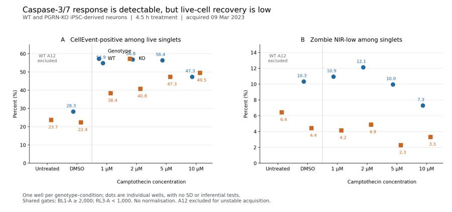
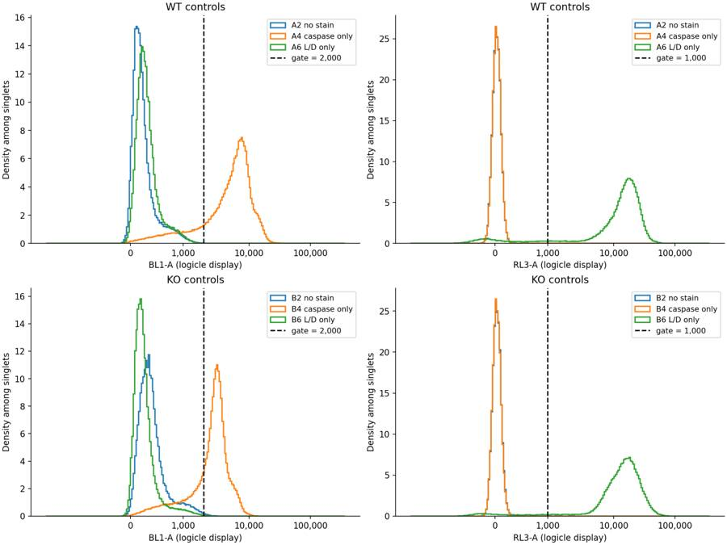
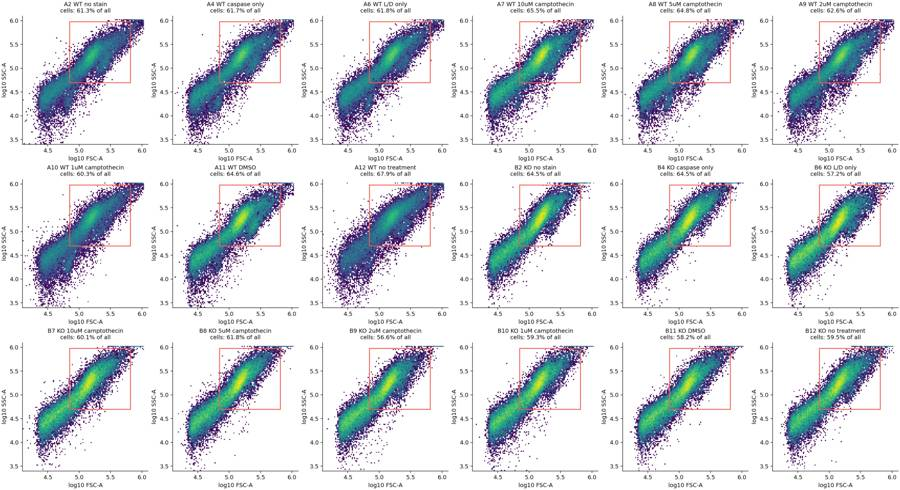
tool call · exec
text(await tools.apply_patch("*** Begin Patch\n*** Update File: /task/outputs/analyse.py\n@@\n- if k==0:ax.legend(title='Genotype',loc='upper left',bbox_to_anchor=(.33,1.0),frameon=False,ncols=2)\n- fig.suptitle('Caspase-3/7 response is detectable, but live-cell recovery is low',fontsize=16,x=.05,ha='left',y=.97)\n+ handles,legend_labels=axs[0].get_legend_handles_labels()\n+ fig.legend(handles,legend_labels,loc='upper right',bbox_to_anchor=(.98,.90),frameon=False,ncols=2)\n+ fig.suptitle('Caspase-3/7 response is detectable, but apparent viability is low',fontsize=16,x=.05,ha='left',y=.97)\n*** End Patch"));
const results=await Promise.allSettled([
tools.web__run({open:[{ref_id:"https://www.biolegend.com/Files/Images/BioLegend/literature/images/07-0175-01_Zombie_Dyes_Info_Sheet.pdf"},{ref_id:"https://documents.thermofisher.com/TFS-Assets/LSG/manuals/cellevent_caspase_3_7_grn_flow_cytometry_assay_kit_man.pdf"}],response_length:"long"}),
tools.exec_command({cmd:"python - <<'PY'\nimport sys,pandas as pd\nsys.path.insert(0,'outputs')\nfrom analyse import draw_figure\nq=pd.read_csv('outputs/well_metrics.csv');draw_figure(q)\nfor dose in ['DMSO','1uM camptothecin','2uM camptothecin','5uM camptothecin','10uM camptothecin']:\n t=q[q.treatment==dose].set_index('genotype');a=t.loc['WT','caspase_live_pct'];b=t.loc['KO','caspase_live_pct'];print(dose, 'KO-WT',b-a,'ratio',b/a)\nfor genotype in ['WT','KO']:\n t=q[(q.genotype==genotype)&q.treatment.str.contains('camptothecin|DMSO')].set_index('treatment');base=t.loc['DMSO','caspase_live_pct'];print(genotype,'vs vehicle', t.caspase_live_pct-base)\nPY","max_output_tokens":2500})
]);results.forEach((r,i)=>text({i,...r}));
tool output
Script completed
Wall time 1.5 seconds
Output:
{}
{"i":0,"status":"fulfilled","value":"Internal Error ()\nciteturn2view0 [wordlim: 200] Source: open({\"ref_id\":\"https://www.biolegend.com/Files/Images/BioLegend/literature/images/07-0175-01_Zombie_Dyes_Info_Sheet.pdf\",\"lineno\":null}); \nFailed to fetch https://www.biolegend.com/Files/Images/BioLegend/literature/images/07-0175-01_Zombie_Dyes_Info_Sheet.pdf: (402) Payment Required--------------------------------------------------------------------------------\nCellEvent Caspase-3/7 Green Flow Cytometry Assay Kit User Guide (Pub.No. MAN0007522 B.0) (https://documents.thermofisher.com/TFS-Assets/LSG/manuals/cellevent_caspase_3_7_grn_flow_cytometry_assay_kit_man.pdf)\nciteturn2view1 [wordlim: 200] Crawled: today; Content type: application/pdf; Number of pages: 4; Source: open({\"ref_id\":\"https://documents.thermofisher.com/TFS-Assets/LSG/manuals/cellevent_caspase_3_7_grn_flow_cytometry_assay_kit_man.pdf\",\"lineno\":null}); Total lines: 150\nL0@P0: CellEvent™ Caspase-3/7 Green Flow Cytometry Assay Kit\nL1@P0: Catalog Numbers C10427, C10740\nL2@P0: Pub. No. MAN0007522 Rev. B.0\nL3@P0: WARNING! Read the Safety Data Sheets (SDSs) and follow the handling instructions. Wear appropriate protective eyewear,\nL4@P0: clothing, and gloves. Safety Data Sheets (SDSs) are available from thermofisher.com/support.\nL5@P0: Product description\nL6@P0: A distinctive feature of the early stages of apoptosis is the activation of caspase enzymes, which are cysteine-aspartic acid-specific\nL7@P0: proteases. These enzymes participate in a series of reactions triggered in response to pro-apoptotic signals and result in the cleavage of\nL8@P0: protein substrates and subsequent cell disassembly. The recognition sequence in the target substrate always includes an aspartic acid\nL9@P0: residue; cleavage takes place at the carbonyl end of that residue.\nL10@P0: CellEvent™ Caspase-3/7 Green Detection Reagent is a fluorogenic substrate for detection of activated caspases 3 and 7 in apoptotic\nL11@P0: cells. This cell-permeant reagent consists of a 4 amino acid peptide (DEVD) conjugated to a nucleic acid binding dye. During apoptosis,\nL12@P0: caspase-3 and caspase-7 proteins are activated and are able to cleave the caspase 3/7 recognition sequence encoded in the DEVD\nL13@P0: peptide. Cleavage of the recognition sequence and binding of DNA by the reagent labels apoptotic cells with a bright, fluorogenic signal.\nL14@P0: When used together with the SYTOX™ AADvanced™ Dead Cell Stain, apoptotic cells can easily be discriminated from live and necrotic\nL15@P0: cells (see Figure 1).\nL16@P0: Figure 1 Flow cytometry analysis with the CellEvent™ Caspase-3/7 Green Flow Cytometry Assay Kit.\nL17@P0: Jurkat cells (T-cell leukemia, human) were treated with (A) DMSO or (B) 10 µM camptothecin for 3 hours before labeling with the CellEvent™\nL18@P0: Caspase-3/7 Green Flow Cytometry Assay Kit. Stained samples were analyzed on the Attune™ Acoustic Focusing Cytometer equipped with a\nL19@P0: 488‑nm laser, and fluorescence emission was collected using a 530/30 bandpass filter for CellEvent™ Caspase-3/7 Green Detection Reagent and\nL20@P0: a 690/50 bandpass filter for SYTOX™ AADvanced™ Dead Cell Stain, respectively. Note that the treated cells have a higher percentage of apoptotic\nL21@P0: cells (panel B) than the basal level of apoptosis seen in the control cells (panel A). A = apoptotic cells, V = viable cells, N = necrotic cells.\nL22@P0: Because no single parameter defines apoptosis in all systems, we strongly suggest using a combination of different measurements for\nL23@P0: reliable detection of apoptosis. Thermo Fisher Scientific offers a wide selection of products for apoptosis research; for more information,\nL24@P0: refer to http://thermofisher.com/apoptosis.\nL25@P0: Spectral characteristics\nL26@P0: The absorption and fluorescence emission spectra of the CellEvent™ Caspase-3/7 Green Detection Reagent following cleavage of the\nL27@P0: DEVD peptide sequence and SYTOX™ AADvanced™ Dead Cell Stain are given in Figure 2 (panels A and B, respectively). These spectra\nL28@P0: were obtained in 10 mM Tris, 1 mM EDTA, pH 8 in the presence of double-stranded DNA. The CellEvent™ Caspase-3/7 Green Detection\nL29@P0: Reagent exhibits greater than a 30‑fold increase upon cleavage and binding DNA. Similarly, the SYTOX™ AADvanced™ Dead Cell Stain\nL30@P0: exhibits a fluorescence enhancement of greater than 500‑fold. The absorption and fluorescence emission maxima of the CellEvent™\nL31@P0: reagent/DNA and SYTOX™ AADvanced™ stain/DNA complexes are 511 nm/533 nm and 546 nm/647 nm, respectively.\nL32@P0: USER GUIDE\nL33@P0-1: For Research Use Only. Not for use in diagnostic procedures.Figure 2 Spectra for the CellEvent™ Caspase-3/7 Green Flow Cytometry Assay Kit.\nL34@P1: Fluorescence excitation and emission spectra of the (A) CellEvent™ Caspase-3/7 Green Detection Reagent following cleavage of the DEVD peptide\nL35@P1: sequence and (B) SYTOX™ AADvanced™ Dead Cell Stain, bound to DNA.\nL36@P1: Contents and storage\nL37@P1: Component\nL38@P1: Amount\nL39@P1: Concentration Storage[1]\nL40@P1: Cat. No. C10427 Cat. No. C10740\nL41@P1: CellEvent™ Caspase-3/7\nL42@P1: Green Detection Reagent\nL43@P1: (Component A)\nL44@P1: 100 tests 20 tests 500 µM\nL45@P1: ≤–20°C\nL46@P1: Desiccate\nL47@P1: Store vial upright\nL48@P1: Protect from light\nL49@P1: SYTOX™ AADvanced™ Dead\nL50@P1: Cell Stain\nL51@P1: (Component B)\nL52@P1: 100 tests 20 tests 1 mM[2]\nL53@P1: Dimethylsulfoxide (DMSO)\nL54@P1: (Component C)\nL55@P1: 200 µL 200 µL Not applicable\nL56@P1: Number of reactions: Sufficient material is supplied for 100 reactions (Cat. No. C10427) or 20 reactions (Cat. No. C10740) based on the protocol\nL57@P1: “Stain cells with CellEvent™ Caspase-3/7 Green Flow Cytometry Assay Kit” on page 2.\nL58@P1: Approximate fluorescence excitation and emission maxima (bound to DNA): CellEvent™ Caspase-3/
… [7,730 more characters not shown]18
agent
I’ll exclude A12 because its acquisition is too unstable to support the untreated WT comparison. The remaining wells show a camptothecin response in both genotypes, with KO generally lower among live singlets. Only 2.3–12.1% of singlets pass the live gate, so validating viability is the priority before using this assay for an AAV rescue study.
tool call · exec
text(await tools.apply_patch("*** Begin Patch\n*** Add File: /task/outputs/write_report.py\n+\"\"\"Write the interpretation and machine-readable answer from the measured results.\"\"\"\n+from pathlib import Path\n+import json\n+import numpy as np\n+import pandas as pd\n+\n+OUT=Path('/task/outputs')\n+Q=pd.read_csv(OUT/'well_metrics.csv').set_index('well')\n+SUMMARY=pd.read_csv(OUT/'condition_summary.csv')\n+QUESTION='Is a difference in caspase activity present in PGRNKOs compared to WT PGP1 neurons?'\n+CHANGE={\n+ 'what':'Viability calibration controls in a repeat pilot',\n+ 'from':'Zombie NIR 1:500 for 10 min, with unstained and single-stained wells but no independently verified viable/killed neuronal references',\n+ 'to':'Add genotype-matched, independently verified viable and heat-killed neuronal aliquots, plus a 1:1 mixture, processed in parallel through the same Zombie NIR 1:500 for 10 min and CellEvent 1:1000 for 30 min workflow; independently check viability at the end of staining',\n+ 'why':'Only 2.29-12.12% of singlets in retained experimental wells are Zombie NIR-low, including 10.33% WT and 4.44% KO in DMSO. The small, genotype-dependent surviving population can bias the caspase comparison. Calibration must distinguish true preparation-associated death from an unsuitable viability stain/gate before selecting a reagent or harvest change.'\n+}\n+\n+def condition(well,metric='caspase_live_pct'):\n+ return SUMMARY[(SUMMARY.wells==well)&SUMMARY.condition.str.endswith('__'+metric)].iloc[0].condition\n+\n+comparisons=[]\n+for label,a,b,direction in [\n+ ('PGRN-KO versus WT in DMSO','A11','B11','decrease'),\n+ ('PGRN-KO versus WT at 1 uM camptothecin','A10','B10','decrease'),\n+ ('PGRN-KO versus WT at 2 uM camptothecin','A9','B9','decrease'),\n+ ('PGRN-KO versus WT at 5 uM camptothecin','A8','B8','decrease'),\n+ ('PGRN-KO versus WT at 10 uM camptothecin','A7','B7','no_clear_change'),\n+ ('WT DMSO versus 5 uM camptothecin','A11','A8','increase'),\n+ ('KO DMSO versus 5 uM camptothecin','B11','B8','increase'),\n+]:\n+ x=Q.loc[a,'caspase_live_pct'];y=Q.loc[b,'caspase_live_pct']\n+ magnitude=f'{x:.2f}% to {y:.2f}% caspase_positive/live; b-a = {y-x:+.2f} percentage points; b/a = {y/x:.3f}. One well per condition.'\n+ if direction=='no_clear_change':magnitude+=' The sign reverses with plausible fluorescence or scatter boundaries, so this is not a robust KO increase.'\n+ comparisons.append(dict(comparison=label,a=condition(a),b=condition(b),direction=direction,magnitude=magnitude,confidence='low'))\n+comparisons.append(dict(comparison='PGRN-KO versus WT apparent viability in DMSO',a=condition('A11','live_pct'),b=condition('B11','live_pct'),direction='decrease',magnitude=f'{Q.loc[\"A11\",\"live_pct\"]:.2f}% to {Q.loc[\"B11\",\"live_pct\"]:.2f}% live/singlets; b-a = {Q.loc[\"B11\",\"live_pct\"]-Q.loc[\"A11\",\"live_pct\"]:+.2f} percentage points. Viability assignment requires independent validation.',confidence='low'))\n+answer={\n+ 'question':QUESTION,\n+ 'comparisons':comparisons,\n+ 'overall_answer':'partial: descriptive WT-KO differences are detectable, with lower caspase-positive fractions in KO in DMSO and at 1-5 uM camptothecin. Both genotypes respond to camptothecin. This run does not establish a reproducible genotype effect or consistently increased KO caspase activity because each condition has one well, apparent viability is very low, and untreated WT A12 is excluded.',\n+ 'assay_verdict':'needs_optimisation',\n+ 'next_action':'repeat_with_change',\n+ 'next_change':CHANGE,\n+ 'excluded_wells':['A12'],\n+ 'caveats':[\n+ 'One acquired well per genotype-condition; no independent biological replication or estimable between-well SD. Event counts are not biological replicates.',\n+ 'A12 (untreated WT) has a 122.7-fold acquisition-rate increase after the first 20 s and is excluded; an untreated WT-KO contrast is unavailable.',\n+ 'Only 2.29-12.12% of singlets in retained experimental wells are Zombie NIR-low. Without independently validated live/killed references, apparent viability and survivor selection limit biological interpretation.',\n+ 'The 10 uM WT-KO direction changes with gate boundaries; the 5 uM difference can also reverse at the most extreme tested fluorescence thresholds. This is an exploratory gating analysis.',\n+ 'DMSO addition is 10 uL, whereas drug-stock additions are 2, 4, 10 and 20 uL. If the drug stock is in DMSO, the vehicle is matched only at 5 uM; stock solvent is not stated.',\n+ 'Scatter gates cannot verify neuronal identity and omit small fragments/shrunken cells. Caspase-positive frequencies measure a gated population, not total culture caspase activity or enzyme kinetics.',\n+ 'Zombie NIR precedes the 30 min CellEvent incubation, so the two stains do not necessarily report the same time point; detached cells can be lost during aspiration/washes.',\n+ 'CellEvent stock concentration/catalogue number and a caspase-inhibitor control are absent. A 1:1000 dilution alone does not establish molar concentration or assay specificity in this preparation.',\n+ 'A8 and B8 each contain one small acquisition restart fragment; they are retained with notes because removing the fragment changes the primary metric by only +0.063 and +0.220 percentage points, respectively.'\n+ ]\n+}\n+(OUT/'answer.json').write_text(json.dumps(answer,indent=2,ensure_ascii=False)+'\\n',encoding='utf-8')\n+\n+rows=[]\n+for label,a,b in [('Untreated',None,'B12'),('DMSO','A11','B11'),('1 µM','A10','B10'),('2 µM','A9','B9'),('5 µM','A8','B8'),('10 µM','A7','B7')]:\n+ av='excluded (A12)' if a is None else f'{Q.loc[a,\"caspase_live_pct\"]:.2f} ({a})'\n+ bv=f'{Q.loc[b,\"caspase_live_pct\"]:.2f} ({b})'\n+ delta='not estimable' if a is None else f'{Q.loc[b,\"caspase_live_pct\"]-Q.loc[a,\"caspase_live_pct\"]:+.2f}'\n+ alive='—' if a is None else f'{Q.loc[a,\"liv
… [14,672 more characters not shown]tool output
Script completed
Wall time 0.3 seconds
Output:
{}
{"chunk_id":"68ef32","wall_time_seconds":0.122000023,"exit_code":0,"original_token_count":8,"output":"Wrote report.md and answer.json\n"}tool call · exec
text(await tools.apply_patch("*** Begin Patch\n*** Add File: /task/outputs/validate_outputs.py\n+\"\"\"Independent round-trip and schema checks for the delivered analysis.\"\"\"\n+from pathlib import Path\n+import csv\n+import hashlib\n+import json\n+import re\n+import xml.etree.ElementTree as ET\n+import numpy as np\n+import pandas as pd\n+import flowkit as fk\n+from PIL import Image\n+\n+ROOT=Path('/task');OUT=ROOT/'outputs'\n+layout=pd.read_csv(ROOT/'inputs/plate_layout.csv')\n+counts=pd.read_csv(OUT/'counts.csv',keep_default_na=False)\n+flags=pd.read_csv(OUT/'flags.csv',keep_default_na=False)\n+summary=pd.read_csv(OUT/'condition_summary.csv',keep_default_na=False)\n+answer=json.loads((OUT/'answer.json').read_text(encoding='utf-8'))\n+\n+assert counts.columns.tolist()==['file','well','population','role','parent','count','pct_of_parent']\n+assert flags.columns.tolist()==['file','well','issue_type','evidence','decision']\n+assert summary.columns.tolist()==['condition','wells','n_wells_used','mean','sd','metric_definition','normalisation_applied']\n+assert len(flags)==18 and set(flags.file)==set(layout.file) and flags.file.is_unique\n+assert set(zip(flags.file,flags.well))==set(zip(layout.file,layout.well))\n+assert set(flags.issue_type)<=set(['none','clog','ran_dry','too_few_events','saturation','bad_control','mislabel','other'])\n+assert set(flags.decision)<=set(['keep','keep_with_note','exclude'])\n+for _,r in flags.iterrows():\n+ if r.issue_type!='none':assert r.evidence and re.search(r'\\d',r.evidence)\n+\n+strategy=fk.parse_gating_xml(str(OUT/'gates.xml'))\n+gate_ids={name for name,path in strategy.get_gate_ids()}\n+assert gate_ids==set(counts.population)-{'all_events'}\n+assert all(re.fullmatch(r'[A-Za-z][A-Za-z0-9_]*',name) for name in gate_ids)\n+ns={'g':'http://www.isac-net.org/std/Gating-ML/v2.0/gating'}\n+xml=ET.parse(OUT/'gates.xml')\n+for dim in xml.findall('.//g:dimension',ns):\n+ assert dim.attrib['{'+ns['g']+'}compensation-ref']=='uncompensated'\n+gate_parent={g.attrib['{'+ns['g']+'}id']:g.attrib.get('{'+ns['g']+'}parent_id','all_events') for g in xml.getroot() if g.tag.endswith('Gate')}\n+\n+populations=set(counts.population)\n+assert len(counts)==18*len(populations)==144\n+assert set(counts.file)==set(layout.file)\n+assert set(counts.role)<=set(['cells','singlets','live','marker_positive','other'])\n+assert not counts.duplicated(['file','population']).any()\n+count_checks=0\n+for _,r in layout.iterrows():\n+ sample=fk.Sample(ROOT/'inputs/raw'/r.file)\n+ assert sample.metadata['wellid']==r.well\n+ result=strategy.gate_sample(sample)\n+ part=counts[counts.file==r.file].set_index('population')\n+ assert set(part.index)==populations and set(part.well)=={r.well}\n+ allrow=part.loc['all_events']\n+ assert int(allrow['count'])==sample.event_count\n+ assert allrow.role=='other' and allrow.parent=='none' and allrow.pct_of_parent==''\n+ for role in ['cells','singlets','live','marker_positive']:\n+ assert (part.role==role).sum()==1\n+ assert len(counts[counts.role==role].population.unique())==1\n+ for population in gate_ids:\n+ record=part.loc[population]\n+ assert int(record['count'])==result.get_gate_count(population)\n+ assert int(record['count'])==float(record['count'])\n+ assert record.parent==gate_parent[population]\n+ expected=100*int(record['count'])/int(part.loc[record.parent,'count'])\n+ assert np.isclose(float(record.pct_of_parent),expected,rtol=1e-9,atol=1e-8)\n+ count_checks+=1\n+ assert int(part.loc['live','count'])+int(part.loc['dead','count'])==int(part.loc['singlets','count'])\n+ assert int(part.loc['caspase_positive','count'])+int(part.loc['caspase_dead','count'])==int(part.loc['caspase_all_singlets','count'])\n+\n+excluded=set(flags.loc[flags.decision=='exclude','well'])\n+assert set(answer['excluded_wells'])==excluded\n+assert summary.condition.is_unique\n+for _,r in summary.iterrows():\n+ wells=r.wells.split(';')\n+ assert len(wells)==int(r.n_wells_used) and not excluded.intersection(wells)\n+ assert np.isfinite(float(r['mean']))\n+ if int(r.n_wells_used)==1:assert r.sd==''\n+ assert r.normalisation_applied=='none'\n+ m=re.fullmatch(r'100 \\* (\\w+) / (\\w+)',r.metric_definition)\n+ assert m is not None\n+ numerator,denominator=m.groups()\n+ vals=[]\n+ for w in wells:\n+ p=counts[counts.well==w].set_index('population')\n+ vals.append(100*int(p.loc[numerator,'count'])/int(p.loc[denominator,'count']))\n+ assert np.isclose(float(r['mean']),np.mean(vals),rtol=1e-9,atol=1e-8)\n+\n+assert set(answer)==set(['question','comparisons','overall_answer','assay_verdict','next_action','next_change','excluded_wells','caveats'])\n+assert answer['comparisons']\n+for comparison in answer['comparisons']:\n+ assert set(comparison)==set(['comparison','a','b','direction','magnitude','confidence'])\n+ assert comparison['a'] in set(summary.condition) and comparison['b'] in set(summary.condition)\n+ assert comparison['direction'] in ['increase','decrease','no_clear_change']\n+ assert comparison['confidence'] in ['high','medium','low']\n+ assert re.search(r'\\d',comparison['magnitude'])\n+ a=float(summary.set_index('condition').loc[comparison['a'],'mean'])\n+ b=float(summary.set_index('condition').loc[comparison['b'],'mean'])\n+ if comparison['direction']=='increase':assert b>a\n+ if comparison['direction']=='decrease':assert b<a\n+assert answer['overall_answer'].startswith(('yes:','partial:','no:'))\n+assert answer['assay_verdict'] in ['fit_for_purpose','needs_optimisation','not_fit_for_purpose']\n+assert answer['next_action'] in ['proceed_as_planned','repeat_unchanged','repeat_with_change','optimise_reagent_or_setting','change_treatment_or_timing','switch_assay','stop']\n+assert set(answer['next_change'])==set(['what','from','to','why'])\n+assert all(isinstance(v,str) for v in answer['next_change'].values()
… [1,606 more characters not shown]tool output
Script completed Wall time 1.2 seconds Output:
{}{"chunk_id":"7bc530","wall_time_seconds":1.001314202,"session_id":54827,"original_token_count":0,"output":""}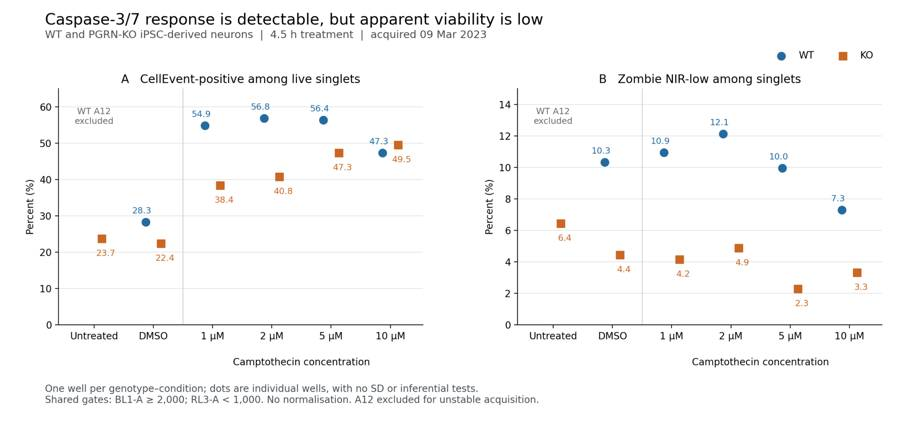
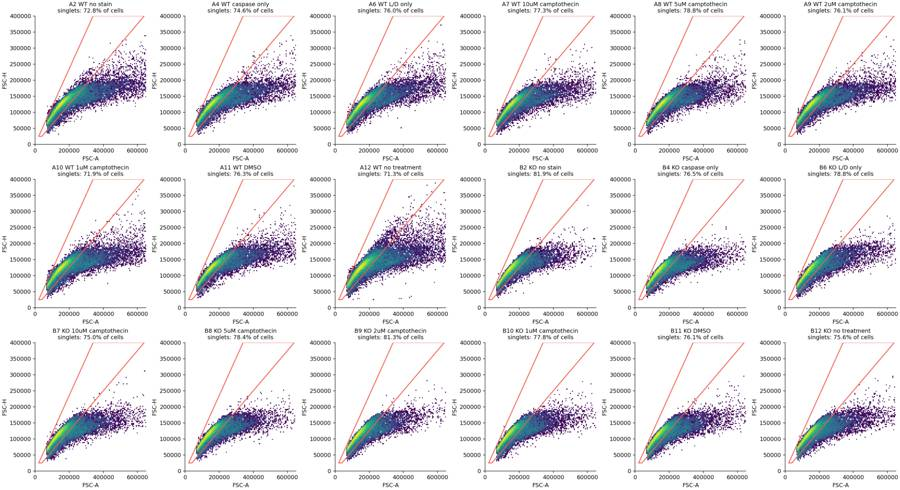
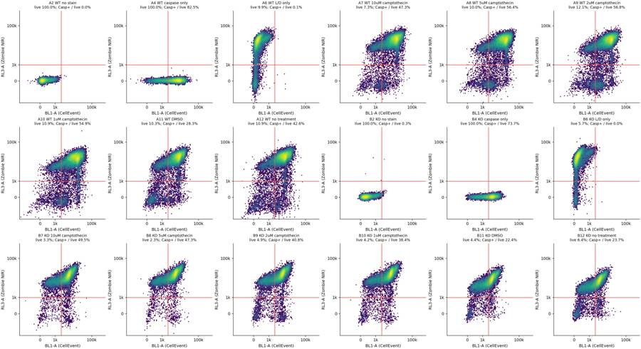
tool call · exec
text(await tools.write_stdin({session_id:54827,chars:"","yield_time_ms":1000,"max_output_tokens":3000}));
text(await tools.exec_command({cmd:"python - <<'PY'\nimport json\nfrom pathlib import Path\nm=json.loads(Path('outputs/fcs_metadata.json').read_text())\nfor key in ['spillover','timestep','#flowrate','date']+[f'p{i}v' for i in range(1,10)]+[f'p{i}r' for i in range(1,10)]:\n vals={v.get(key) for v in m.values()}\n if len(vals)!=1:print('VARIABLE',key,vals)\nprint('Required output sizes:')\nfor f in ['gates.xml','counts.csv','flags.csv','condition_summary.csv','figure.png','report.md','answer.json']:\n p=Path('outputs')/f;print(f,p.stat().st_size)\nprint('Report words:',len(Path('outputs/report.md').read_text().split()))\nPY","max_output_tokens":1000}));
tool output
Script completed
Wall time 0.1 seconds
Output:
{"chunk_id":"ddaa07","wall_time_seconds":0.00000278,"exit_code":0,"original_token_count":108,"output":"{\n \"status\": \"PASS\",\n \"flowkit_version\": \"1.2.3\",\n \"files_reapplied\": 18,\n \"populations_per_file\": 8,\n \"gate_count_matches\": 126,\n \"all_event_count_matches\": 18,\n \"counts_rows\": 144,\n \"flags_rows\": 18,\n \"summary_rows\": 33,\n \"excluded_wells\": [\n \"A12\"\n ],\n \"gatingml_round_trip\": true,\n \"summary_values_recomputed\": true,\n \"answer_references_valid\": true,\n \"report_headings_valid\": true,\n \"figure_valid\": true\n}\n"}
{"chunk_id":"366457","wall_time_seconds":0.00000337,"exit_code":0,"original_token_count":42,"output":"Required output sizes:\ngates.xml 3011\ncounts.csv 13625\nflags.csv 4689\ncondition_summary.csv 2958\nfigure.png 199450\nreport.md 14680\nanswer.json 6208\nReport words: 2042\n"}21
agent
Completed all seven deliverables in `/task/outputs`. Saved gates reproduce the counts for all 18 files.
**Partial answer:** KO had lower caspase-positive fractions in DMSO and at 1–5 µM camptothecin. However, apparent viability was only **2.3–12.1%**, with one well per condition. A12 was excluded for unstable acquisition.
**Recommendation:** repeat with independently verified viable/killed controls before advancing to AAV rescue experiments.
[Report](/task/outputs/report.md) · [Figure](/task/outputs/figure.png) · [Structured answer](/task/outputs/answer.json)